Gloryfield · Guide & FAQ
How it all works
Every feature of Gloryfield and the numbers behind it, 225 questions in 10 topics. Tap a question to open it.
Contents
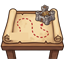
Getting startedWhat is Gloryfield about?
You rule a small kingdom and lead its heroes and armies against the Ash Host. The game has two halves that feed each other: your kingdom, where you build, gather goods, house people and train soldiers, and the campaign, where you fight battles on maps to free the land. Battles bring loot and unlock new troops and heroes; the kingdom gives you the army to win them.
What campaigns are there?
The game is split into campaigns, one per land:
| # | Campaign | Status |
|---|---|---|
| 1 | The Ash Host (Plains of Verlo to the Throne of Ash) | Free, playable |
| 2 | Whisperwood | Free, playable |
| 3 | Frostfang Reach | Free, coming later |
| 4 | Sunken Maelis | Paid pack, coming later |
| 5 | Skyreach Isles | Paid pack, coming later |
| 6 | Sunspire Wastes | Paid pack, coming later |
| 7 | Crystal Deep | Paid pack, coming later |
You can see all of them in the Shop on the start screen. The paid packs add new lands to play; gameplay power is never sold.
How big is each campaign?
Campaign 1, The Ash Host, has 12 battles over five maps: Plains of Verlo, Mist Marsh, Iron Pass, Dragon Coast and the Ash Plains. Campaign 2, Whisperwood, has 14 battles over five maps: Whisperwood Edge, Glowcap Hollows, Fairy Glades, Thornheart Mire and the World Tree.
How do I get to Whisperwood?
Win every battle of campaign 1 first. Then the world map opens, and its lands can be played in any order. Inside a land you play the battles one after another. Every other land you have already freed makes the remaining lands a bit tougher: their enemies are 2 levels higher for each one.
If I buy a pack, do I have it in all my saves?
Yes. What you buy is kept apart from your saves, so it counts for every save slot. Deleting a save does not remove a purchase.
What are the difficulty levels?
You pick the difficulty when you start a new game, and it stays with that save.
| Easy | Medium | Hard | |
|---|---|---|---|
| Enemy strength | 75% | 100% | 115% |
| Gold from campaign battles | 90% | 100% | 125% |
| Building, training and resting times | 60% | 100% | 120% |
| Gear from a boss (first win) | blue | blue | purple |
Easy is meant for enjoying the story, Medium is the game as it is meant to be played (the advised choice), and Hard is for experienced commanders who want richer loot. Blessings from the Grove Temple also follow the time setting, so they last a little shorter on Easy and a little longer on Hard.
What is "God" difficulty?
God is listed on the New Game screen as part of the God pack. It is meant as a mode where you set everything up yourself. It cannot be chosen yet.
How do saves work?
There are 4 save slots, so you can play several games side by side, each with its own campaign progress and difficulty. Saves on the start screen shows each slot with its difficulty, the next battle and when you last played it. Tap a slot to see its battles won, Main Hall level and number of heroes, and to play or delete it.
When does the game save?
It saves at moments that matter: after a battle, a purchase or a minigame, when finishing buildings or training, and whenever you leave the app or put it in the background. You never need to save by hand.
Can I get a deleted save back?
No. Deleting a slot cannot be undone: everything in it is gone. The game asks you to confirm first.
What do I start with?
A new kingdom starts with a level 1 Main Hall, Barracks, Farm, Lumber Mill, Workers' Houses and Hero Hall. You also get 120 gold, 10 crystals, 500
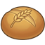
food, 500 wood and 300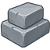
stone, about 15 people, and a first army of 120 Militia and 60 Hunters. Your first hero is Aldric the warrior.What are all the currencies and goods?
| Good | What it is mostly for |
|---|---|
| Gold | Buildings, recruiting, promotions, skills, upkeep of your people |
| Food | Feeding your people, recruiting, marching out |
| Wood | Buildings, recruiting, carts and tents on the road |
| Stone | Buildings, siege engines |
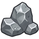 Ore | Buildings, troop ranks, weapons and armour, hero promotions |
| Crystals | Finishing timers early, buying goods you are short of, hiring crews |
| Banner seals | Hero promotions and hiring heroes |
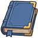 Skill books | Hero skills and hero promotions |
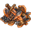 Shards | Levelling up gear |
Where do gold, food, wood, stone and ore come from?
Mostly from your own buildings: the Main Hall makes gold, Farms and the Glowcap Garden make food, the Lumber Mill wood, the Quarry stone and the Mine ore. On top of that:
- Battles: gold, ore and a loot chest whose contents depend on the enemies you beat (for example, mercenaries carry food and gold, miners carry ore, the undead never carry food).
- Freed places on the maps send goods each day: a farm 300 food, a village 300 food and 200 wood, a mine 12 ore, a port 250 gold.
- The travelling market, village requests, guard contracts, daily goals at the Monument, and the daily chest (gold).
How much do campaign battles pay?
A first win pays 40 + 25 × the battle's level in gold (times the difficulty's gold factor); a battle won again pays half of that. Each win also brings ore (2 + level ÷ 3), skill books (1 + level ÷ 5) and banner seals (1 + level ÷ 4, doubled on the first win). A first win gives 3 + level crystals; a replay gives 1 crystal only if you beat your old star score.
Where do crystals come from?
- First wins in the campaign (3 + the battle's level), and 1 when you improve your stars.
- The daily chest: 1 on day 3, 2 on day 5 and 10 on day 7 of your streak.
- The Ash Storm (opens after 10 battles won): 5 crystals once a day for a win.
- Monument goals, loot chests, some minigames, and now and then a thank-you from a villager.
What can I do with crystals?
- Finish a timer early: 1 crystal per 5 minutes left. The last 3 minutes are always free.
- Buy goods you are short of: 1 crystal per 100 food, wood or stone, per 50 gold, or per 10 ore.
- Hire an extra building crew for 8 hours (15 crystals), refresh the market, or bring a mission home early.
Where do shards come from?
Shards drop in the loot chest after a won battle, sometimes as a big hoard worth ten handfuls. You also get them by melting spare gear at the Smithy; a higher Smithy gets more shards out of each piece (+10% every 3 levels, up to +50%).
Your kingdom
What buildings are there, and when can I build them?
New buildings open as your Main Hall grows. Other buildings can never be higher than your Main Hall.
| Main Hall | Opens |
|---|---|
| 1 | Barracks, Farm, Lumber Mill, Workers' Houses, Hero Hall (you start with these) |
| 2 | Archery Range, Quarry, Training Ground, Warehouse, Monument |
| 3 | Tavern, Infirmary, Expedition Post |
| 4 | Care House, Smithy, Watchtower |
| 5 | Stables, Mine, Wagon Yard |
| 6 | Academy |
| 7 | Siege Workshop |
| 8 | Tree Lodges, Glowcap Garden |
| 9 | Mage Tower, Moonwell Retreat |
| 10 | Glory Hall, Grove Temple |
Tree Lodges, Glowcap Garden, Moonwell Retreat and Grove Temple stand in the Whisperwood grove next to town: you can only build them once Whisperwood Edge is freed.
What is the highest level of each building?
Most buildings go up to level 20. These stop at level 10: Tavern, Care House, Watchtower, Wagon Yard, Monument, Expedition Post, Tree Lodges, Glowcap Garden, Moonwell Retreat and Grove Temple.
What does each building do?
- Main Hall: the heart of the kingdom. Makes gold, sets the level cap for all other buildings, gives building crews and decrees.
- Farm / Lumber Mill / Quarry / Mine / Glowcap Garden: make food, wood, stone, ore and food.
- Workers' Houses / Tree Lodges: homes for your people.
- Barracks, Archery Range, Stables, Siege Workshop: recruit and promote troops. A higher building trains bigger batches (20 + 10 per level) and unlocks better ranks (rank II at level 3, III at level 6, IV at level 10). Tree Lodges and the Grove Temple train Whisperwood troops.
- Hero Hall: your heroes live here. Heroes can level up to 5 × the Hero Hall's level, and some heroes need a certain Hero Hall level before you can hire them.
- Warehouse: keeps part of your goods safe from raids.
- Training Ground: weapon drills for heroes (3 per hero per day, +1 every 3 levels) and the weapon practice minigame.
- Smithy: weapons and armour for your troops can be improved up to level 3 + the Smithy's level (max 15); melts spare gear into shards.
- Infirmary: takes in wounded soldiers after a fight and heals them back into your army.
- Tavern: makes people happier, brings the travelling market, and patrons leave paid contracts there.
- Care House: makes people happier.
- Expedition Post: needed for missions and supply runs; more expeditions at once with higher levels.
- Watchtower: warns of raids, helps defend the city and keeps watch over the roads.
- Wagon Yard: missions and supply runs travel faster.
- Monument: daily goals, growth goals and great deeds, each with a reward.
- Moonwell Retreat: a hero rests there for some hours and goes into the next battle stronger.
- Grove Temple: blessings for your army for some hours, paid in gold and food.
- Academy, Mage Tower, Glory Hall: can already be built, but their research, mages and banners do not do anything yet in the current version.
How does the Main Hall grow?
To raise the Main Hall, a number of your other buildings must already be at its current level:
| Raising the Main Hall to | Other buildings needed at the current level |
|---|---|
| 2 | none |
| 3 to 5 | 2 |
| 6 to 10 | 3 |
| 11 to 15 | 4 |
| 16 to 20 | 5 |
So to go from Main Hall 7 to 8, three other buildings must stand at level 7 first.
What does a Main Hall upgrade cost?
Times are for Medium; Easy takes 60% of the time and Hard 120%.
| To level | Cost | Time |
|---|---|---|
| 2 | 160 wood, 78 stone, 78 gold | 2m 30s |
| 3 | 220 wood, 110 stone, 110 gold | 4m 02s |
| 4 | 310 wood, 160 stone, 160 gold | 6m 33s |
| 5 | 450 wood, 220 stone, 220 gold | 10m 37s |
| 6 | 630 wood, 320 stone, 320 gold | 17m 13s |
| 7 | 900 wood, 450 stone, 450 gold | 27m 53s |
| 8 | 1,300 wood, 640 stone, 640 gold | 45m 11s |
| 9 | 1,800 wood, 910 stone, 910 gold | 1h 13m |
| 10 | 2,600 wood, 1,300 stone, 1,300 gold | 1h 58m |
| 11 | 3,650 wood, 1,850 stone, 1,850 gold | 3h 12m |
| 12 | 5,200 wood, 2,600 stone, 2,600 gold | 5h 11m |
| 13 | 7,400 wood, 3,700 stone, 3,700 gold | 8h 24m |
| 14 | 10,500 wood, 5,250 stone, 5,250 gold | 13h 36m |
| 15 | 14,900 wood, 7,450 stone, 7,450 gold | 22h 03m |
| 16 | 21,150 wood, 10,550 stone, 10,550 gold | 24h |
| 17 | 30,000 wood, 15,000 stone, 15,000 gold | 24h |
| 18 | 42,650 wood, 21,300 stone, 21,300 gold | 24h |
| 19 | 60,550 wood, 30,250 stone, 30,250 gold | 24h |
| 20 | 85,950 wood, 43,000 stone, 43,000 gold | 24h |
How do building costs and times grow?
Every building has its own starting price, and each level costs a fixed percentage more than the one before (about 36% to 46% more, depending on the building). Times grow by at least 58% per level, but no upgrade ever takes longer than 24 hours (before the difficulty setting). Building something new costs the same as its first upgrade. A Farm, for example, costs 65 wood, 13 stone and 13 gold and 50 seconds at first, about 760 wood, 150 stone and 150 gold and 32 minutes for level 9 to 10, and 16,450 wood, 3,300 stone and 3,300 gold for the last step to 20. You pay the full cost when you start.
What are building crews?
Every construction needs a crew. You have 1 crew, plus 1 for every 4 Main Hall levels (2 at Main Hall 4, 3 at 8, 4 at 12, 5 at 16, 6 at 20). Each crew takes 3 free people while it works, so if everyone is busy in the buildings, take a few people off work first.
Can I get more crews?
Yes, you can hire a crew for 8 hours. It costs 150 + 50 × your Main Hall level in gold, or 15 crystals. A hired crew brings its own people, so it does not need free people from your town. You can have 1 hired crew at a time, or 2 from Main Hall 10.
Can I finish a building faster?
- Pay crystals: 1 crystal per 5 minutes left. The last 3 minutes are always free, so a short job can be finished at no cost.
- Proclaim the Master Builders decree: buildings started while it lasts take 20% less time.
- Play on Easy: all building times are 60%.
How much do my production buildings make?
Each level makes about 17% more than the level before. These are the amounts with every work place filled and a calm town:
| Level | Gold (Main Hall) | Food (Farm) | Wood (Lumber Mill) | Stone (Quarry) | Ore (Mine) | Food (Glowcap) |
|---|---|---|---|---|---|---|
| 1 | 40 | 120 | 100 | 70 | 30 | 90 |
| 2 | 47 | 140 | 120 | 82 | 35 | 110 |
| 3 | 55 | 160 | 140 | 96 | 41 | 120 |
| 4 | 64 | 190 | 160 | 110 | 48 | 140 |
| 5 | 75 | 220 | 190 | 130 | 56 | 170 |
| 6 | 88 | 260 | 220 | 150 | 66 | 200 |
| 7 | 100 | 310 | 260 | 180 | 77 | 230 |
| 8 | 120 | 360 | 300 | 210 | 90 | 270 |
| 9 | 140 | 420 | 350 | 250 | 110 | 320 |
| 10 | 160 | 490 | 410 | 290 | 120 | 370 |
| 12 | 220 | 670 | 560 | 390 | 170 | – |
| 15 | 360 | 1,100 | 900 | 630 | 270 | – |
| 20 | 790 | 2,350 | 1,950 | 1,400 | 590 | – |
All amounts are per hour.
What changes how much a building actually makes?
The amount per hour is multiplied by:
- Workers: the share of its work places that are filled. With no workers it makes nothing.
- Happiness: Joyful ×1.1, Calm ×1, Restless ×0.85, Angry ×0.7.
- Decrees: Work Harder ×1.25 (not the Main Hall), Tithe ×1.6 (Main Hall gold only), Call to Arms ×0.85, Festival ×0.9, Day of Rest ×0.5.
- Unpaid upkeep: ×0.75 while you cannot pay your people.
Do I need to collect production?
Yes. Goods pile up at the building until you collect them: tap the bubble above it, or open the building and tap "Ready to collect". A building holds at most 8 hours of its output, then it stops piling up, so collect at least every 8 hours. Your people eat from the farms' piles and are paid from the Main Hall's pile first, so a town left alone does not starve next to full barns.
Who are my people?
All your people form one group. They work in buildings, form building crews, carry for your armies on missions and trips, and go along as cooks, healers, smiths and clerks. New people move in by themselves while you have room: one every 10 minutes. People freed on your travels can also come to live with you. No newcomers arrive when your people are unhappy (below 50) or when you cannot pay their upkeep.
How many people can I house?
Workers' Houses give room for 12 + 10 × their level (22 at level 1, 112 at level 10, 212 at level 20). Each level of the Tree Lodges adds room for 8 more. If more people live in town than you have room for, your people get unhappy.
How do workers and staff work?
Every building except the houses, Tree Lodges, Monument and Glory Hall has work places:
- Producing buildings (Main Hall, Farm, Lumber Mill, Quarry, Mine, Glowcap Garden): 2 + level places. Output follows how many are filled.
- Service buildings (all others): 1 + half the level places (rounded down). Where their bonus depends on staff, they give half their bonus with nobody at work and the full bonus when every place is filled. This counts for the Tavern and Care House (happiness), the Infirmary (healing speed), the Wagon Yard (travel speed), the Watchtower (defence) and the Expedition Post (extra supply goods).
Open a building to change its number of workers. A new producing building takes free people to work as soon as it is built.
What are professions?
People are known by the job they do: cooks work in the Tavern and Glowcap Garden; healers in the Infirmary, Care House, Grove Temple and Moonwell Retreat; smiths in the Smithy and Siege Workshop; clerks in the Main Hall, Warehouse, Expedition Post, Academy, Hero Hall and Mage Tower; everyone else is a labourer. When your army marches out you can bring one of each along from those buildings (which are short one worker meanwhile): a cook means a third less food on the road, a healer a third fewer soldiers lost, a smith 8% stronger troops, and a clerk a third less wood and gold and a quarter more loot.
What do free people do?
People who are not working, building or away do odd jobs. The town always keeps 3 free for a building crew; every free person beyond those earns 0.8 gold an hour, a little more than their upkeep, and having odd-jobbers adds +3 to happiness.
What does it cost to keep my people?
- Upkeep: 0.5 gold per person per hour (50% more during Master Builders), minus what odd jobs earn.
- Food: 0.5 food per person per hour (30% less during Rationing, 30% more during Healers' Oath).
Only your people eat at home; soldiers need food when they march out. If the gold runs out, upkeep goes unpaid: happiness −20, production drops to 75% and nobody new comes. If the food runs out, your people go hungry: happiness −25.
How does happiness work?
Happiness is a number from 0 to 100. It moves 5 points an hour towards a target made of these parts (you can see them in the People window):
| Part | Points |
|---|---|
| Base | +50 |
| Full stores (food for a whole day) | +10 |
| Hunger (no food left) | −25 |
| Room to live (homes under 80% full) | +5 |
| Overcrowded homes | −10 |
| Tavern | up to +10 (its level, less with too few staff) |
| Care House | up to +10 (its level, less with too few staff) |
| Odd jobs: busy hands | +3 |
| Favours done for the village (last 2 days) | up to +15 |
| Village requests ignored (last 2 days) | down to −15 |
| A battle won (last 24 hours) | +5 |
| A land freed (last 24 hours) | +15 |
| The city was raided (last 24 hours) | −15 |
| Decrees in force | see the decree |
What does happiness change?
| Happiness | Word | Production | Newcomers |
|---|---|---|---|
| 80 and up | Joyful | 110% | 25% faster |
| 50 to 79 | Calm | 100% | normal |
| 30 to 49 | Restless | 85% | none |
| below 30 | Angry | 70% | none, and one person leaves every 3 hours |
What are decrees?
From the Main Hall you can proclaim a decree: a strong bonus for some hours that always has a price. Only the Festival costs goods. When a decree ends, it rests for 4 hours before you can proclaim it again. You can have 1 decree at a time, 2 from Main Hall 8 and 3 from Main Hall 16.
| Decree | Main Hall | Hours | Bonus | Price |
|---|---|---|---|---|
| Work Harder | 2 | 8 | Farms, mills, quarries and mines make 25% more | Happiness −15 |
| Festival | 3 | 6 | Happiness +20 | 200 gold and 400 food; production −10% |
| Open Gates | 3 | 8 | Newcomers arrive twice as fast | The next raid comes sooner (a fifth less wait) |
| Master Builders | 4 | 8 | Buildings started now take 20% less time | Upkeep +50% |
| Call to Arms | 5 | 8 | Training 25% faster, batches 50% bigger | Production −15% |
| Rationing | 5 | 12 | People eat 30% less | Happiness −10 |
| Healers' Oath | 6 | 12 | 25% fewer soldiers lost, wounded heal twice as fast | Food use +30% |
| Day of Rest | 6 | 4 | Happiness +25, and it rises three times as fast | Production −50% |
| Tithe | 8 | 8 | The Main Hall makes 60% more gold | Happiness −10 |
What does the Warehouse do?
It protects your goods when raiders break into the city. Its level sets a stock number: 2,000 at level 1, growing by 30% per level (about 21,200 at level 10 and 292,400 at level 20). A quarter of that number, of each of food, wood, stone and gold, is safe. When a raid gets in, raiders take 20% to 35% of whatever you have above the safe amount. Ore is never taken.
What else happens when a raid gets in?
Besides the goods, 1 to 3 people are lost, some defending soldiers fall or are wounded, and one production building burns: it makes nothing for 3 hours. Happiness also drops by 15 for a day. A Watchtower gives warning (30 minutes per level) and makes your defenders 4% stronger per level (with full staff), so you can prepare or fight the raid yourself.
How does the Infirmary work?
After a fight, part of the soldiers you lost are wounded instead of dead: 60% after a win, 40% after a defeat. With an Infirmary they wait there and heal back into your army. It has 20 + 15 × level beds and heals 12 + 4 × level soldiers an hour with full staff (half as fast with no healers, twice as fast during Healers' Oath). Without an Infirmary, or when its beds are full, the wounded are lost too. You can also heal everyone at once with crystals.
What does the Tavern do exactly?
- Adds up to +10 happiness.
- From level 2, the travelling market can come to your square, once you have freed towns that send traders.
- From level 5 you get 1 free market refresh per visit, from level 9 two.
- Patrons leave paid contracts there (from your 2nd battle won): 1, plus 1 more at levels 4 and 8.
What do the Moonwell Retreat and Grove Temple give?
At the Moonwell Retreat a hero rests for 6 hours at level 1 (18 minutes shorter per level after that, 3h 18m at level 10) and goes into the next battle with 10% + 2% per level more health and attack. One hero can rest at a time, plus one more every 4 levels. The Grove Temple gives blessings for your whole army:
| Blessing | Temple level | Hours | Cost | Effect |
|---|---|---|---|---|
| Blessing of the Oak | 1 | 8 | 150 gold, 300 food | All troops and heroes +10% health |
| Blessing of the Hunt | 2 | 8 | 200 gold, 300 food | Ranged troops hit 15% harder |
| Swift Roots | 3 | 8 | 250 gold, 400 food | Heroes charge their power 25% faster |
| Blessing of the Thorn | 5 | 6 | 350 gold, 500 food | Melee troops hit 15% harder |
One blessing at a time, two from temple level 5.
What does the Monument give?
The Monument holds daily goals (2 at level 1, one more every 3 levels), growth goals (such as Main Hall levels, number of people, army size) and glory goals for great deeds in the campaign. Each daily goal pays 60 + 30 × the Monument's level in gold, plus crystals from level 3 and a seal from level 5.
Any tips for a strong kingdom?
- Keep your Farms ahead of your people: every person eats 12 food a day, and a full day of food in store gives +10 happiness.
- Collect at least every 8 hours, or production is wasted.
- Raise several buildings evenly: the Main Hall needs 2 to 5 of them at its level before it can grow.
- Keep a few people free: every crew needs 3, and your armies need carriers.
- Build the Tavern and Care House early and staff them: up to +20 happiness keeps your town Calm or Joyful.
- Use decrees with a plan: Work Harder or Tithe while happiness is high, a Festival or Day of Rest to win it back.
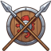
Your armyWhat is a legion?
Every troop card you place in a battle is a whole legion of 20 soldiers of that kind (a Spear Wagon legion also stands for 20). Your soldiers are real and limited: they live in your army, you train them in your buildings, and soldiers lost in a fight are gone from your army. You can see how many legions of a kind you have left on its card in the battle tray (the "×" number).
What troops can I have, and where do I train them?
| Troop | Trained in | Class | Troop points | Unlocks |
|---|---|---|---|---|
| Swordsmen | Barracks | Infantry | 2 | From the start |
| Archers | Archery Range | Archer | 3 | From the start |
| Spearmen | Barracks | Infantry | 3 | After battle 3 |
| Knights | Stables | Cavalry | 5 | After battle 7 |
| Spear Wagon | Siege Workshop | Archer (vehicle) | 5 | After battle 11 |
| Elven Rangers | Tree Lodges | Archer | 3 | After battle 16 |
| Treant Guardians | Grove Temple | Infantry | 6 | After battle 20 |
You also need the building itself. The Barracks stands from the start; the Archery Range needs Main Hall level 2, the Stables level 5 and the Siege Workshop level 7. The Tree Lodges (Main Hall 8) and the Grove Temple (Main Hall 10) can only be built once Whisperwood Edge is freed. Catapults, griffins, dragons and other kinds come with later lands.
What makes each troop special?
| Troop | Health | Attack | Special |
|---|---|---|---|
| Swordsmen | 300 | 13 | Sturdy, cheap front line |
| Archers | 160 | 15 | Shoot from 4.5 tiles away |
| Spearmen | 270 | 15 | Hit riders and flying foes 60% harder |
| Knights | 430 | 24 | Very fast; their first strike does double damage |
| Spear Wagon | 260 | 44 | Shoots 6 tiles far; triple damage against fliers; takes 2 tiles |
| Elven Rangers | 170 | 18 | Shoot 5 tiles; their first shot does double damage |
| Treant Guardians | 820 | 20 | Very tough and slow; each blow roots the foe in place for a moment (not bosses or fliers) |
These are the numbers for a rank I legion with no upgrades.
What are the classes, and why do they matter?
Every unit belongs to one of four classes, and they form a circle: Infantry beats Cavalry, Cavalry beats Archers, Archers beat Mages, and Mages beat Infantry. A unit does 25% more damage to the class it beats and 15% less to the class that beats it. Classes also decide which troops a hero's leadership skills help (see Heroes). Base defence differs per class too: infantry is the toughest (25), then cavalry (15), archers (8) and mages (6); vehicles get +15 on top.
What are the tiers (ranks) I to IV?
Each kind has four ranks, each with its own name. A higher rank has more health and attack:
| Rank | Health and attack | Building level needed |
|---|---|---|
| I | ×1 | 1 |
| II | ×1.35 | 3 |
| III | ×1.8 | 6 |
| IV | ×2.4 | 10 |
The names per kind:
| Kind | I | II | III | IV |
|---|---|---|---|---|
| Swordsmen | Militia | Swordsmen | Men-at-Arms | Royal Guard |
| Spearmen | Spear Levy | Spearmen | Pikemen | Halberd Guard |
| Archers | Hunters | Archers | Longbowmen | Royal Rangers |
| Knights | Riders | Light Cavalry | Knights | Royal Knights |
| Elven Rangers | Woodland Scouts | Elven Rangers | Silver Hoods | Moonsilver Rangers |
| Treant Guardians | Sapling | Grove Guardian | Old Oak | Ancient of the Grove |
| Spear Wagon | Spear Wagon | Scorpion | Dragon Bane | Royal Bolt Thrower |
How do I unlock a higher rank?
Open the building's Improve tab and train the next rank. This needs the building level from the table above, plus gold and ore:
| Rank | Gold | Ore |
|---|---|---|
| II | 300 | 10 |
| III | 900 | 40 |
| IV | 1,900 | 90 |
After that, all new recruits of that kind come at the new rank, and you can promote the soldiers you already have.
How does training (recruiting) work?
Pick a kind in its building, choose how many with the slider and tap Recruit. You pay at once and the soldiers join your army when the timer ends. Each building runs one job at a time (recruiting or promoting), so the Barracks can't train Swordsmen and Spearmen at the same time. The most you can train in one go is 20 + 10 per building level (30 at level 1, 70 at level 5, 120 at level 10, 220 at level 20).
What does training cost, and how long does it take?
Cost and time for one rank I soldier:
| Troop | Food | Wood | Gold | Stone | Time |
|---|---|---|---|---|---|
| Swordsmen | 4 | 2 | 1 | – | 12 s |
| Spearmen | 4 | 3 | 1 | – | 14 s |
| Archers | 3 | 4 | 1 | – | 14 s |
| Knights | 8 | 3 | 3 | – | 28 s |
| Elven Rangers | 3 | 4 | 2 | – | 16 s |
| Treant Guardians | 10 | 6 | 3 | – | 36 s |
| Spear Wagon | 2 | 30 | 6 | 10 | 2 min 40 s |
Every rank higher costs ×1.6 and takes ×1.5 as long. So one legion (20) of Militia costs 80 food, 40 wood and 20 gold and takes 4 minutes; 20 Royal Guard cost 328 food, 164 wood and 82 gold and take 13.5 minutes. Times are for Medium: on Easy training is 40% faster, on Hard 20% slower.
Can I speed up training?
Yes. Crystals finish a training job early at 1 crystal per 5 minutes left, and the last 3 minutes are always free. The Call to Arms decree (Main Hall level 5, 8 hours) makes training 25% faster and lets you train half again as many at once, but production drops 15% while it lasts.
How do I promote soldiers I already have?
In the building's Promote tab you can move soldiers up to any rank you have trained, even several ranks at once (Militia straight to Royal Guard). They leave their old rank right away and join the new one when the job is done. Each step costs gold, food and a little ore: about 0.6 × the price of the next rank (gold is based on the kind's gold cost + 1), and takes 0.6 × the training time of the next rank. For example, promoting 20 Militia to Swordsmen costs 39 gold, 77 food and 1 ore and takes about 3.5 minutes. A multi-step promotion costs every step on the way added up.
What are weapons and armour upgrades?
Also in the Improve tab, each kind has a Weapons level (+12% attack per level) and an Armour level (+12% health per level). They count for every soldier of that kind, at every rank. The highest level is 3 + your Smithy level, up to 15. Costs per level:
| Level | Gold | Ore | Level | Gold | Ore | |
|---|---|---|---|---|---|---|
| 0 → 1 | 30 | 2 | 7 → 8 | 835 | 9 | |
| 1 → 2 | 91 | 3 | 8 → 9 | 1,009 | 10 | |
| 2 → 3 | 174 | 4 | 9 → 10 | 1,194 | 11 | |
| 3 → 4 | 275 | 5 | 10 → 11 | 1,391 | 12 | |
| 4 → 5 | 394 | 6 | 11 → 12 | 1,599 | 13 | |
| 5 → 6 | 527 | 7 | 12 → 13 | 1,817 | 14 | |
| 6 → 7 | 675 | 8 | 13 → 14 | 2,046 | 15 | |
| 14 → 15 | 2,285 | 16 |
At level 15 a kind hits 2.8 times as hard (or has 2.8 times the health) as at level 0.
How many troops can I take into a battle?
Your heroes decide that. Each hero leads a number of troop points (6 at the start, see Heroes), and the points of all heroes you place are added up. Every legion costs its troop points (Swordsmen 2, Archers 3, Knights 5, ...). You must place a hero before you can place troops. The top of the screen shows "Troops used/total" and "Heroes placed/allowed". You can also only place as many legions of a kind as you have soldiers for (20 per legion).
What happens if I bring more troops than the battle is made for?
Every campaign battle is made for a certain number of troop points. Bring more, and about 6 seconds into the fight the enemy calls up reinforcements worth about as much as your extra troops. The deploy screen warns you with a red "+ foes" number. If your heroes are much stronger than usual for that battle, the reinforcements come stronger too. Missions and raids on your city have no reinforcements.
Which soldiers fight when I place a legion?
The game always sends your best rank first. Your soldiers are grouped in twenties from rank IV down; if there are a few left over at one rank (say 8 Royal Guard), they join the rank below and the legion counts as that lower rank. Fewer than 20 soldiers left at rank I do not make a legion.
How many soldiers do I lose in a battle?
It depends on how hurt each legion is at the end. A legion loses 20 × the share of its health it lost × ½ after a victory or ¾ after a defeat. So a legion that is wiped out costs 10 soldiers in a win and 15 in a loss; a legion that ends unhurt loses nobody. The Healers' Oath decree lowers losses by 25%, and taking a healer along in the muster lowers them by a third.
What is the Infirmary?
The Infirmary (Main Hall level 3) saves part of your losses. Of the soldiers a battle, mission or raid costs, 60% are wounded instead of fallen after a win, and 40% after a defeat. The wounded go into the Infirmary's beds and are healed back into your army over time. Without an Infirmary, or when its beds are full, the wounded are lost too. The result screen shows how many fell and how many were wounded.
How many beds does the Infirmary have, and how fast does it heal?
| Infirmary level | Beds | Healed per hour (full staff) |
|---|---|---|
| 1 | 35 | 16 |
| 2 | 50 | 20 |
| 3 | 65 | 24 |
| 5 | 95 | 32 |
| 10 | 170 | 52 |
| 15 | 245 | 72 |
| 20 | 320 | 92 |
That is 20 + 15 beds and 12 + 4 soldiers an hour per level. Healers working in the Infirmary matter: with no staff it heals at half speed, with every place filled at full speed. The Healers' Oath decree doubles the healing speed. The biggest group of wounded is healed first.
Can I heal the wounded at once?
Yes, the Infirmary can heal everyone at once for crystals, at the usual rate: 1 crystal per 5 minutes of healing time left (the last 3 minutes are free). Wounded soldiers are not in your army while they wait, so they can't fight.
What do escorts cost?
Nothing. A hero brings up to two groups of bodyguards that stand beside him: they cost no troop points and no soldiers from your army (see Heroes).
What army do I start with?
120 Militia (six legions of Swordsmen) and 60 Hunters (three legions of Archers), with the Barracks at level 1.
Any tips for building my army?
- Unlock the next rank early: every rank is a big jump (×1.35 to ×2.4), and promoting soldiers you already have is cheaper than recruiting new ones.
- Weapons and armour help a whole kind at every rank, so they are a great use of gold and ore for the kinds you use most.
- Build the Infirmary early; without it every hurt soldier is lost for good.
- Mix classes so your army can answer whatever the enemy brings.
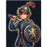
HeroesWho are the heroes?
| Hero | Role | Class | Rank | Health | Attack | Power |
|---|---|---|---|---|---|---|
| Aldric | Warrior | Infantry | Rare | 440 | 30 | Battle Cry |
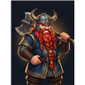 Thorgrim | Dwarf | Infantry | Uncommon | 620 | 26 | Earthquake |
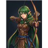 Fenna | Archer | Archer | Rare | 280 | 24 | Arrow Rain |
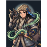 Saran | Steppe Rider | Cavalry | Rare | 380 | 28 | Storm Charge |
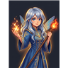 Ylva | Mage | Mage | Epic | 260 | 32 | Fire Rain |
These are their numbers at level 1. Fenna shoots 5 tiles far, Ylva 3.5 tiles (and her attacks hit foes nearby too). Saran is fast and, like all riders, his first strike does double damage.
How do I get new heroes?
Aldric is with you from the start. The others are met in the story, then hired at the Hero Hall:
| Hero | Met | Hero Hall level | Hire cost |
|---|---|---|---|
| Thorgrim | Freed from the Ash Host's mine after battle 3 | 2 | 600 gold, 6 seals |
| Fenna | Found in the Mist Marsh after battle 5 | 4 | 1,500 gold, 12 seals |
| Ylva | Waits in the Old Chapel after battle 8 | 6 | 4,000 gold, 25 seals |
| Saran | Rides in from the Dragon Coast after battle 11 | 8 | 8,000 gold, 40 seals |
Tap a locked hero in the Hall of Heroes to see what is still needed.
Can I get a hero sooner?
Yes. In the hire window, Join now takes the hero on at once for crystals, even before the story brings them and without the Hero Hall level: Thorgrim 75, Fenna 100, Saran 110, Ylva 125 crystals.
How many heroes can fight in one battle?
One at first, two after you have won 5 battles, and three after 10. Some missions allow only one hero. A hero who is away (on a mission or resting) can't be placed.
How do heroes gain experience (XP)?
- Campaign battles: a first win gives 30 + 15 × the battle's level (45 XP in the very first battle). Winning a battle again gives a quarter of that, and a defeat gives 10 XP.
- Every hero you placed gets the full amount, even if they fell in the fight.
- Missions: each hero who went gets 60 + 20 × the mission's level, twice as much on a hero quest.
- Hero Drills at the Training Ground: up to 70 XP for a perfect drill, 25 gold a drill. You get 5 drills a day shared by all heroes, and each hero can do 3 a day, +1 for every 3 Training Ground levels.
- Ash Storms and defending your city against a raid also give some XP.
How much XP does a level need?
The XP for the next level is 40 × level^1.55, rounded:
| Level | XP to the next | Total XP to reach the next |
|---|---|---|
| 1 | 40 | 40 |
| 5 | 485 | 1,205 |
| 9 | 1,205 | 4,874 (level 10) |
| 20 | 4,156 | 34,699 |
| 29 | 7,392 | 87,796 (level 30) |
| 50 | 17,197 | 345,844 |
| 59 | 22,227 | 525,429 (level 60) |
| 99 | 49,579 | 1,949,671 (level 100) |
Why did my hero stop levelling?
Two limits apply, and the lower one counts:
- The Hero Hall: a hero can be at most 5 levels per Hero Hall level (level 5 with Hall 1, 10 with Hall 2, 30 with Hall 6, 100 with Hall 20).
- Promotion: the level stops at 10, 30, 60 and 100 until the hero is promoted.
At a limit, the hero still keeps up to one level's worth of XP, ready for when the limit is lifted. The highest level is 100.
How do promotions work?
When a hero reaches the level cap of their stage, they can be promoted at the Hero screen. A promotion gives a new look, a higher level cap, a new skill, +10% to all their stats and +2 troop points.
| Promotion | At level | Gold | Seals | Skill books | Ore | Hero Hall |
|---|---|---|---|---|---|---|
| 1st | 10 | 300 | 5 | 2 | 5 | – |
| 2nd | 30 | 1,500 | 15 | 6 | 15 | – |
| 3rd | 60 | 6,000 | 40 | 15 | 40 | 6 |
| 4th (Awakening) | 100 | 20,000 | 100 | 40 | 100 | 10 |
Remember the Hero Hall also limits levels: you need Hall 2 to reach level 10, Hall 6 for 30, Hall 12 for 60 and Hall 20 for 100.
What are the hero looks?
Each promotion changes how the hero looks and what they are called:
| Hero | Start | 1st | 2nd | 3rd | Awakened |
|---|---|---|---|---|---|
| Aldric | Recruit | Squire | Knight | Champion | Lionheart |
| Thorgrim | Miner | Axeman | Shieldbreaker | Mountain King | Earthfather |
| Fenna | Woodrunner | Hunter | Sharpshooter | Windreader | Starbow |
| Saran | Rider | Scout | Stormrider | Wind Khan | Sky Rider |
| Ylva | Apprentice | Sparkbearer | Fire Witch | Fae Queen | Sunchild |
How do hero stats grow?
Health and attack grow 3% per level, times the hero's rank: Uncommon ×1.15, Rare ×1.3, Epic ×1.5. So Thorgrim gains about 3.45% per level, Aldric, Fenna and Saran 3.9%, and Ylva 4.5%. Every promotion multiplies that by another 10%. Defence grows at half that pace and lethality at 30% of it. Gear and skills add on top.
What are skills?
Each hero has six skills. The first two (the active power and one passive) are ready from the start; each promotion unlocks the next one at level 1, and the 4th promotion unlocks the Awakening. There are four kinds:
- Active power: used in battle when charged. Each skill level adds +10% power.
- Passive: makes the hero stronger (attack, health, defence, lethality, less damage taken, or faster charging).
- Leadership: makes your troops of the hero's class stronger.
- Awakening: a big upgrade to the active power.
What does it cost to upgrade a skill?
Skills go up to level 5. Going from level L to L+1 costs 100 × L² gold and 2 × L skill books:
| Upgrade | Gold | Skill books |
|---|---|---|
| 1 → 2 | 100 | 2 |
| 2 → 3 | 400 | 4 |
| 3 → 4 | 900 | 6 |
| 4 → 5 | 1,600 | 8 |
A skill from 1 to 5 costs 3,000 gold and 20 books in total.
What are Aldric's and Thorgrim's skills?
Aldric
| Skill | Unlocks | Effect |
|---|---|---|
| Battle Cry (power) | Start | Allies within 3 tiles hit 40% harder for 6 seconds; Aldric heals 20% of his health |
| Shield Wall | Start | 3% less damage taken per level |
| Banner Bearer (leadership) | Squire | Infantry hit 2% harder per level |
| Chivalry | Knight | Defence +5% per level |
| Regroup (leadership) | Champion | Infantry +3% health per level |
| Lionheart (awakening) | Lionheart | Battle Cry reaches the whole army |
Thorgrim
| Skill | Unlocks | Effect |
|---|---|---|
| Earthquake (power) | Start | Heavy damage to enemies within 2 tiles, stunned for 2 seconds |
| Stone Skin | Start | Health +5% per level |
| Mountain Folk (leadership) | Axeman | Infantry defence +3% per level |
| Fury | Shieldbreaker | Attack +4% per level |
| Unbreakable | Mountain King | 3% less damage taken per level |
| Earthfather (awakening) | Earthfather | Earthquake reaches twice as far |
What are Fenna's, Saran's and Ylva's skills?
Fenna
| Skill | Unlocks | Effect |
|---|---|---|
| Arrow Rain (power) | Start | Six arrows hit random enemies |
| Hawk Eye | Start | Lethality +4 per level |
| Bow Master (leadership) | Hunter | Archers hit 2% harder per level |
| Quick Draw | Sharpshooter | Power charges 6% faster per level |
| Forest Spirit (leadership) | Windreader | Archers +3% health per level |
| Starbow (awakening) | Starbow | Arrow Rain shoots 12 arrows |
Saran
| Skill | Unlocks | Effect |
|---|---|---|
| Storm Charge (power) | Start | Charges up to 6 tiles through the enemy, hitting everything in his lane; all your riders get a new first strike |
| Rider's Blood | Start | Lethality +4 per level |
| Stampede (leadership) | Scout | Cavalry hit 2% harder per level |
| Nimble | Stormrider | 3% less damage taken per level |
| Steppe Wind (leadership) | Wind Khan | Cavalry +3% health per level |
| Sky Rider (awakening) | Sky Rider | Storm Charge hits the full width |
Ylva
| Skill | Unlocks | Effect |
|---|---|---|
| Fire Rain (power) | Start | Fire falls on a group of enemies; you can aim it yourself |
| Fae Fire | Start | Attack +4% per level |
| Ring of Fire (leadership) | Sparkbearer | Mages hit 2% harder per level |
| Mana | Fire Witch | Power charges 6% faster per level |
| Fae Light (leadership) | Fae Queen | Mage defence +3% per level |
| Sunchild (awakening) | Sunchild | Fire Rain falls twice |
How does a hero's power charge?
A hero's power fills up over time (about 22 seconds on time alone) and faster when the hero deals damage, so in a real fight it is usually ready after 10 to 14 seconds. Quick Draw and Mana, some relics, the Swift Roots blessing (+25%) and standing on a ley line (+50%) all make it charge faster. Tap the hero's round button when it glows to use it. The damage of a power grows with the hero's attack and with its skill level.
How many troops does a hero lead?
A hero leads 6 troop points, +1 for every 5 levels, +2 for every promotion.
| Hero | Troop points |
|---|---|
| Level 1 | 6 |
| Level 10, not promoted | 8 |
| Level 10, 1st promotion | 10 |
| Level 30, 2 promotions | 16 |
| Level 60, 3 promotions | 24 |
| Level 100, awakened | 34 |
The troop points of all heroes you place are added up to make your army's limit in battle.
What are escorts?
Every hero brings up to two groups of bodyguards that stand beside or behind them. They cost no troop points and no soldiers. Aldric and Thorgrim bring Swordsmen, Fenna brings Archers, Saran brings Knights and Ylva brings Acolytes (her apprentices, who fight from a distance). Escorts get stronger with the weapons and armour upgrades of their kind and +15% per promotion of their hero. If you take a hero back during setup, the escorts go too.
How do leadership skills work?
Leadership skills make all your troops of the hero's class stronger in that battle, escorts included: Aldric and Thorgrim help infantry, Fenna archers (Archers, Elven Rangers and the Spear Wagon), Saran cavalry (Knights), and Ylva mages (for now only her Acolytes). Two heroes of the same class both add their bonus. Leadership counts from the start of the fight.
What is the hero Power score?
Power is one number to compare heroes. It adds up: 2 × attack + 0.2 × health + 1.5 × defence + 2 × lethality + 50 per skill level + 20 per troop point the hero leads. Everything that makes a hero stronger (levels, promotions, skills and gear) raises it. You see it on the hero cards and the hero screen.
What are defence, lethality and "less damage taken"?
In battle, damage is multiplied by (1 + attacker's lethality ÷ 100) and by 100 ÷ (100 + target's defence). So 25 defence takes off 20% of the damage, and 20 lethality adds 20%. "Less damage taken" (from skills like Shield Wall and from relics) is taken off on top, up to 60% at most.
What about hero gear?
Each hero has six gear slots: Helm, Arms, Body, Boots, Weapon and their own Relic. A hero you hire joins with a basic (grey) weapon and body armour; the other slots start empty and are filled with gear you find on the way. Gear adds flat stats on top of the hero's own (see the Gear section).
What is the Moonwell Retreat?
In the Whisperwood quarter (Main Hall 9, after freeing Whisperwood Edge) a hero can rest. While resting the hero is away, but goes into the next battle with extra health and attack. After that battle the bonus is used up, and a hero must fight before resting again.
| Retreat level | Rest time | Bonus | Heroes at once |
|---|---|---|---|
| 1 | 6 h | +12% | 1 |
| 4 | 5 h 6 min | +18% | 2 |
| 5 | 4 h 48 min | +20% | 2 |
| 10 | 3 h 18 min | +30% | 3 |
The bonus is 10% + 2% per level, and each level makes the rest 5% shorter.
What are blessings?
The Grove Temple (Main Hall 10, after freeing Whisperwood Edge) gives blessings for gold and food. One at a time, two from temple level 5.
| Blessing | Temple level | Lasts | Cost | Effect |
|---|---|---|---|---|
| Blessing of the Oak | 1 | 8 h | 150 gold, 300 food | All troops and heroes +10% health |
| Blessing of the Hunt | 2 | 8 h | 200 gold, 300 food | Ranged troops hit 15% harder |
| Swift Roots | 3 | 8 h | 250 gold, 400 food | Heroes charge their power 25% faster |
| Blessing of the Thorn | 5 | 6 h | 350 gold, 500 food | Melee troops hit 15% harder |
Any tips for heroes?
- Keep the Hero Hall up to date: it caps every hero's level (5 per Hall level) and is needed to hire new heroes.
- Promotions are the biggest step: new skill, +10% stats, +2 troop points and stronger escorts.
- Use more heroes as soon as you can: each one brings their own troop points, escorts and power.
- A first win gives four times the XP of a replay, so push new battles when you can.
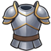
GearWhat is gear?
Gear is the equipment your heroes wear. Every hero has six slots: Helm, Arms, Body, Boots, Weapon and Relic. Each piece adds stats to the hero who wears it. Gear only goes on heroes, not on your troops. Pieces you are not wearing wait in your Vault.
What does each slot give?
Every slot has its own main stat. The numbers below are base values. The piece really gives the base value times its strength, which comes from its colour and level (see the next questions).
| Slot | Base stats |
|---|---|
| Helm | +8 defense |
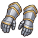 Arms | +6 attack |
| Body | +60 health |
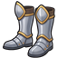 Boots | +4 lethality |
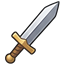 Weapon | +8 attack, +4 lethality |
| Relic | different for each hero (see "What are relics?") |
What do the gear colours mean?
There are five colours, from weakest to best: grey, green, blue, purple and gold. Grey is the common colour. Each step up makes the piece a lot stronger, and every level makes it stronger still.
| Colour | Strength at level 1 | Highest level | Strength at highest level |
|---|---|---|---|
| Grey | ×0.85 | 11 | ×1.70 |
| Green | ×1.00 | 16 | ×2.50 |
| Blue | ×1.45 | 21 | ×4.35 |
| Purple | ×1.90 | 26 | ×6.65 |
| Gold | ×2.35 | 31 | ×9.40 |
For example, grey body armour at level 1 gives 51 health. Gold body armour at level 31 gives 564 health.
How do gear levels work?
Each level adds 10% of the piece's level-1 strength. A green piece at level 6 is 1.5 times as strong as at level 1. Better colours can go higher: grey stops at level 11, and each colour after that goes 5 levels further, up to level 31 for gold.
What are shards?
Shards are what you use to level up gear. You get them by melting spare gear at the Smithy and from loot chests after battles. You put shards into a piece your hero is wearing, and it levels up straight away, with no waiting. You can only level a piece while a hero is wearing it.
How many shards does a level cost?
Going from level L to the next level costs 9 × (colour step) × L^1.25 shards, rounded. The colour step is 1 for grey, 2 for green, 3 for blue, 4 for purple and 5 for gold. Shards you put in are never lost: anything more than a level needs counts towards the next one.
| Colour | First level-up | Last level-up | All shards to the highest level |
|---|---|---|---|
| Grey | 9 | 160 | 792 |
| Green | 18 | 531 | 3,811 |
| Blue | 27 | 1,142 | 10,726 |
| Purple | 36 | 2,012 | 23,373 |
| Gold | 45 | 3,159 | 43,712 |
What are sets?
Most pieces belong to one of five sets: Lionguard, Dwarfsteel, Wildwood, Emberheart or Stormrider. The set is picked at random when the piece is made, and a fused piece keeps its set. If a hero wears two or more pieces of the same set, each of those pieces gets stronger.
How big is the set bonus?
Each piece of a set gets +5% for every other piece of that set the hero wears, up to +20%.
| Pieces of one set worn | Bonus on each of those pieces |
|---|---|
| 1 | none |
| 2 | +5% |
| 3 | +10% |
| 4 | +15% |
| 5 or 6 | +20% |
A set bonus is always smaller than one step up in colour, so a better colour always beats a matching set.
What are relics?
The relic is the sixth slot. Each hero has their own relic, and only that hero can wear it. A relic gives stats plus a special effect. Like other gear, it grows with its colour and level. The table shows base values, which are multiplied by the piece's strength.
| Hero | Relic | Base stats | Special effect |
|---|---|---|---|
| Aldric | Lion Shield | +30 health, +10 defense | takes 3% less damage |
| Thorgrim | Dwarven Flask | +80 health, +4 defense | takes 2% less damage, power charges 4% faster |
| Fenna | Elven Quiver | +6 attack, +5 lethality | power charges 5% faster |
| Saran | Lucky Horseshoe | +4 attack, +6 lethality | power charges 6% faster |
| Ylva | Ring of Embers | +4 attack, +4 lethality | power 6% stronger |
Where do relics come from?
Battles, the daily chest and Monument goals never give relics. You can get relics from missions and hero quests, where a hero who went along may find their own relic. You can also buy them from traders (each market visit always offers one, for one of your heroes), or fuse them from other relics of the same hero.
Where does gear come from?
- Battles: your first win always gives 2 pieces, and a boss battle gives an extra piece on the first win. When you win a battle again, you have a 15% chance of a piece for each star you earned.
- Missions: an Ash mission gives 1 piece, or 2 if that mission's favoured hero went along. A hero quest gives 2 pieces with better colours.
- Village fight contracts: a 30% chance of a piece.
- The Forge minigame: a 3-star masterwork of a Battle Axe or Greatsword has a 35% chance to give you a weapon to keep (usually grey, sometimes green).
- The daily chest: one piece on days 3, 5 and 7.
- Monument goals: gear for finished goals.
- The market: traders sell gear for seals or gold.
- Fusing: you can turn spare pieces into a better one.
A new hero who joins you brings a grey weapon and grey body armour. Their other slots start empty.
What colour will gear from battles be?
The chances depend on the battle's enemy level. Missions use the highest enemy level of that region. Hero quests roll as if the level were 6 higher. Village contracts roll as if it were 4 higher than the highest enemy level you have beaten.
| Enemy level | Grey | Green | Blue | Purple | Gold |
|---|---|---|---|---|---|
| 1 to 5 | 85% | 15% | 0% | 0% | 0% |
| 6 to 13 | 60% | 30% | 9% | 1% | 0% |
| 14 to 19 | 45% | 33% | 17% | 5% | 0% |
| 20 and up | 35% | 35% | 20% | 9% | 1% |
What colour is the boss piece?
The first time you beat a battle with a boss, you get one extra piece of a fixed colour. It is blue on Easy and Medium, purple on Hard, and gold on God difficulty.
What gear is in the daily chest?
The daily chest gives a grey piece on day 3, a green piece on day 5 and a blue piece on day 7 of your streak. The slot and set are random. If you miss a day, the streak starts again at day 1.
What gear do Monument goals give?
Once you have finished all of the day's daily goals, they give one grey piece together. Every growth goal gives a green piece, and every glory goal gives a blue piece.
What gear do the traders sell?
Each market visit always offers a weapon, body armour and a relic, plus 1 extra piece at merchant wagons and 2 extra at the full market. Bigger markets bring better colours:
| Market | Colours |
|---|---|
| A trader's cart | 70% grey, 30% green |
| Merchant wagons | 60% green, 40% blue |
| The market | 50% blue, 42% purple, 8% gold |
| Colour | Price in seals | Price in gold |
|---|---|---|
| Grey | 1 | 150 |
| Green | 3 | 400 |
| Blue | 9 | 1,200 |
| Purple | 27 | not for gold |
| Gold | not for seals | not for gold |
You can also trade in a spare piece of the same colour and pay 50 gold per colour step (green 50, blue 100, purple 150, gold 200). That is the only way to get a gold piece from the traders. Any shards you put into the traded piece come back to you.
How does fusing work?
Fusing turns several pieces of one colour into one piece of the next colour. All of them must be the same slot (for relics, the same hero's relic). The piece you fuse from must be at its highest level and sitting in the Vault. The other pieces can be any level. The new piece keeps the slot and set of the piece you fused from and starts at level 1. All the shards you put into any of the fused pieces come back to you.
| Fuse | Pieces needed (this one included) | Cost |
|---|---|---|
| Grey into green | 6 | 200 gold |
| Green into blue | 9 | 800 gold, 3 seals |
| Blue into purple | 12 | 3,000 gold, 10 seals, 2 books |
You cannot fuse purple into gold. Gold comes only from bosses on God difficulty, rare drops and the traders.
Which spare pieces does a fuse use up?
It uses your spare pieces of that colour and slot, lowest level first. Your best spare pieces are used last.
What is melting?
At the Smithy, the smith melts spare gear from the Vault into shards. You need to build the Smithy first. A piece gives its own value plus every shard you ever put into it.
| Colour | Melt value |
|---|---|
| Grey | 4 |
| Green | 10 |
| Blue | 30 |
| Purple | 90 |
| Gold | 270 |
A better smith gets more out of each piece: +10% of the piece's own value for every 3 Smithy levels, up to +50% at Smithy level 15. The shards you put in come back exactly, never more.
How many shards are in a loot chest?
When you win a battle, the chest may hold shards. The chance is 35% plus 15% for each star (50%, 65% or 80%). On a first win, the chance is 1.5 times higher. A handful is 5 + the battle's enemy level in shards. One find in ten is a hoard, worth ten handfuls.
What does the green arrow on gear mean?
It means a piece in your Vault would be an upgrade for one of your heroes. That piece has a better colour than what the hero wears in that slot, or the same colour at a higher level. An empty slot counts too.
Any tips for gear?
- Put your shards into the pieces you will keep. Shards are never wasted, because melting or fusing gives them back.
- A higher colour beats a full set, so do not hold on to a weak piece just for its set.
- Fusing gives back every shard, so level up the piece you want to fuse without worrying.
- Melt spare grey pieces you will not fuse for quick shards, especially once your Smithy is higher.
Battles
How does a battle work?
First you place your heroes and troops in your deploy zone. Then you press START, and the fight plays out by itself: your troops march, aim and strike on their own. During the fight, your job is to use your heroes' powers at the right moment. The battle ends when one side is wiped out or after 2 minutes.
Where can I place my units?
You can only place units in your own zone: the three blue rows at the bottom of the field. Drag a card from the tray onto the zone, or tap a card and then a tile. You can drag a placed unit to move it. Water and other blocked tiles cannot be used, and big units need all of their tiles inside the zone.
You must place a hero first: heroes decide how many troops you can bring. Until a hero is on the field, you cannot place troops. The only exception is special challenges that give you extra troop room.
How many heroes can I bring?
At first, one hero. After you win battle 5 you can bring two, and after battle 10 three. Some missions allow fewer.
How many troops can I bring?
Each hero you place adds troop room: 6, plus 1 for every 5 hero levels, plus 2 for every promotion. Add up all your placed heroes to get your total. For example, a level 12 hero with one promotion leads 6 + 2 + 2 = 10. Each legion costs troop points:
| Legion | Cost |
|---|---|
| Swordsmen | 2 |
| Archers | 3 |
| Spearmen | 3 |
| Elven Rangers | 3 |
| Knights | 5 |
| Spear Wagon | 5 |
| Treant Guardians | 6 |
What is a hero's escort?
Each hero brings up to two groups of bodyguards, placed beside or behind them. Escorts cost no troop points and come and go with their hero. Aldric and Thorgrim bring Swordsmen, Fenna brings Archers, Ylva brings Acolytes and Saran brings Knights. Escorts get stronger with your troop upgrades and +15% for each of their hero's promotions.
Where do my legions come from, and can I lose them?
Each legion on the field is 20 soldiers from your army, and your best-ranked soldiers go first. A legion that gets hurt loses soldiers afterwards. If it is wiped out, it loses about half of its 20 on a win and about three quarters on a defeat (a healer in your caravan lowers this). Part of the losses are only wounded: they go to the Infirmary and come back when they are healed.
What are stances?
Hold your finger on one of your legions while deploying to open its menu, then pick a stance. Heroes always attack.
| Stance | What it does |
|---|---|
| Attack | Moves towards the nearest enemy. |
| Defend | Stays put until an enemy comes within 3 tiles. |
| Hold | Never moves; strikes whatever comes in reach. |
| Flank | Marches straight ahead, then turns to charge an enemy from the side. The charge runs faster and its first hit does double damage. |
In the same menu, the Wait slider makes a unit wait 0 to 5 seconds (in steps of 0.25) before it moves. It still strikes anything that comes in reach. This is handy for letting your front line go first, or for timing a flank.
What does the ground do?
Every tile has terrain, and the deploy screen marks the special ones. Here are the most important:
| Terrain | Effect |
|---|---|
| Forest | Slow; arrows and spells do 30% less to units in it. |
| Hill | Ranged troops get +1.2 range and +15% damage. |
| Plateau | Ranged troops get +1.6 range and +20% damage; you can only get up by the ramp. |
| Road / Crossroads | 25% faster. Cobbled road: 40% faster, even more for riders and siege. |
| Swamp / Ford | Half speed (you can wade through a ford). |
| Mud | Slow, even slower for riders, siege and giants; riders lose their first strike. |
| Tall grass / Elf path | Units in it are not seen until an enemy is within 2 tiles. |
| Thicket | Hides units, stops arrows, slow. |
| Rock wall | Cannot be crossed; arrows do not pass. |
| Boulders | Cannot be crossed; shots that pass them do 30% less. |
| Ruined wall | Cover (30% less from shots), slow; catapults knock it down. |
| Mountain path / Log bridge | One unit at a time. |
| Lava crack | Burns whoever stands on it (fliers are safe). |
| Fairy ring | Slowly heals whoever stands in it. |
| Glowcaps | Seen even at night; units fighting from it do 20% less. |
| Water | Only fliers can cross. |
What is Ash ground?
Ash ground appears on a battlefield when Ash spots are still left in that region: two Ash tiles for each spot. An enemy standing on Ash hits 15% harder. If one of your units stands on an Ash tile for 5 seconds with no enemy within 1.5 tiles, it cleanses the tile and it turns green again.
What happens in a night battle?
At night, ranged units can shoot no further than 2.6 tiles, and you only see enemies within 3.6 tiles of your living units. Enemies on glowcaps can always be seen. The night battles are The Ivy Tower, Glowcap Dell, The Sunken Shrine and Under the World Tree.
What is an ambush?
In some battles, enemies hide beside or behind your zone and break out 8 seconds into the fight. The battles with an ambush are The Hollow Log, The Fairy Circle, The Bramble Gate and Ring of Stones. Keep some troops near your flanks there.
Other battles can have an ambush too. Once you have won 2 battles, a campaign battle without its own night or ambush can hide enemies, depending on how dark and restless that region is. The chance is the region's Darkness % × 0.6, lowered by guarded roads. If the chance is 5% or more, the Watchtower warns you before the fight. An ambush like this brings 2 hidden enemies, or 3 when the region is Threatening.
How does damage work?
Damage = attack × (1 + lethality ÷ 100) × 100 ÷ (100 + the target's defense). On top of that comes the class circle: Infantry beats Cavalry, Cavalry beats Archers, Archers beat Mages, and Mages beat Infantry. Hitting the class you beat does +25%, and hitting the class that beats you does -15%. Heroes can also take less damage from skills and relics, up to 60% less. Knights and other charging riders do double damage with their first hit.
Can I pause, speed up or move the camera?
Yes. The buttons at the bottom right let you pause, switch between 1× and 2× speed, and change the auto camera. If you leave the app, the fight pauses and waits for you.
The camera has three zoom levels: an overview with banners, the field, and close up. Tap the overview to fly in, and use the map button to fly back out. A minimap shows the whole battle. The auto camera can fly in on big moments for you:
| Auto camera | What it does |
|---|---|
| Off | Never moves by itself. |
| Calm (default) | Now and then flies in on an important moment. |
| Full | Also follows the hardest fighting, enemy boss powers and the legions you lose. |
| Cinema | Like Full, and heroes' powers play in slow motion. |
Touching the screen always takes over. The auto camera waits 4 seconds after your last touch.
How do I use a hero's power?
Each hero has a portrait at the bottom with a ring that fills up. When the ring is gold, tap the portrait to use the power. Ylva's Fire Rain is aimed: tap Ylva, then tap the spot where the fire should fall. If you don't aim it, it falls where the enemies stand thickest.
How long does a power take to charge?
A power fills by 4.5% every second, so on time alone it is ready in about 22 seconds. Dealing damage fills it faster, so in a real fight it is often ready in about 10 to 14 seconds. The number on the portrait counts down the seconds on time alone. Relics, skills such as Quick Draw and Mana, the Swift Roots blessing (25% faster) and ley lines all make it charge faster. Every power starts empty at the beginning of a battle.
What does each hero's power do?
The damage below is a base value. It grows with the hero's attack and with the power's skill level.
| Hero | Power | Effect | Awakened |
|---|---|---|---|
| Aldric | Battle Cry | Allies within 3 tiles hit 40% harder for 6 seconds; Aldric heals 20% of his health. | Reaches the whole army. |
| Thorgrim | Earthquake | 80 damage to enemies within 2 tiles, stunned for 2 seconds. | Reaches 4 tiles. |
| Fenna | Arrow Rain | 6 arrows of 45 damage at random enemies. | 12 arrows. |
| Ylva | Fire Rain | 120 damage to everything in a circle of 1.6 tiles. | Fire falls twice. |
| Saran | Storm Charge | 70 damage to everything in a lane up to 6 tiles ahead; all your riders get a new first strike. | Hits the full width. |
What does "Enemy level" mean?
Every battle has an enemy level, shown on its card on the map. Each level makes enemies 12% stronger in health and attack than the level before, and this adds up:
| Enemy level | Strength compared to level 1 |
|---|---|
| 1 | ×1.00 |
| 5 | ×1.57 |
| 10 | ×2.77 |
| 15 | ×4.89 |
| 20 | ×8.61 |
| 25 | ×15.18 |
What does the difficulty change?
You choose the difficulty when you start a new game.
| Difficulty | Enemy health and attack | Battle gold | Building and training time |
|---|---|---|---|
| Easy | ×0.75 | ×0.9 | ×0.6 |
| Medium (advised) | ×1.00 | ×1.0 | ×1.0 |
| Hard | ×1.15 | ×1.25 | ×1.2 |
On Hard, the first-win boss piece is purple instead of blue. God difficulty comes with the God pack.
What are enemy reinforcements?
Six seconds into a campaign battle, the enemy calls up reinforcements if your army is bigger or stronger than the battle is made for. They appear along the enemy's back edge. They are the same kinds of enemies as in that battle (never bosses) and the same level. There are no reinforcements on missions or when you defend your city against a raid.
The "Troops" number on a battle card is how many troop points the battle is made for. During deployment you see "Troops used/your room", and a red "+N foes" warning shows how many reinforcements the enemy will send.
For troops over the limit, the enemy brings as many foes as your extra troops are worth: extra troop points × number of enemies ÷ the battle's troop number, rounded. For example, a battle made for 10 troops with 5 enemies: if you bring 14, that is 4 extra points, so 2 extra enemies.
Strong heroes count too. The game knows how strong a typical hero is at each battle. If your placed heroes are stronger than that on average, the reinforcements come stronger, and at least 2 come even if you brought no extra troops. Each battle, they make up a random share (a third to four fifths) of your extra strength. Some of your advantage always stays, because you earned it.
How are stars earned?
| Stars | You need |
|---|---|
| 1 | Win the battle. |
| 2 | Win with at least one hero still standing. |
| 3 | Win with a hero standing and more than half of your army's total health left. |
You always keep your best result. If time runs out, it counts as a defeat.
What do I get for winning a battle?
L is the battle's enemy level. Gold is also multiplied by your difficulty.
| Reward | First win | Won again |
|---|---|---|
| Gold | 40 + 25 × L | half of that |
| Crystals | 3 + L | 1, only if you beat your best stars |
| Hero XP (each hero who fought) | 30 + 15 × L | a quarter of that |
| Seals | 2 × (1 + L ÷ 4) | 1 + L ÷ 4 |
| Books | 1 + L ÷ 5 | the same |
| Ore | 2 + L ÷ 3 | the same |
| Gear | 2 pieces (+1 for a boss) | 15% chance per star |
Divisions are rounded down. For example, the first win of a level 10 battle gives 290 gold, 13 crystals, 180 XP, 6 seals, 3 books and 5 ore. A first win can also unlock new troops, free places on the map, and bring a new hero you can hire.
If you lose, you get 10 + 5 × L gold, 10 hero XP and 1 ore, and no loot chest.
What is in the loot chest?
When you win, the chest holds 2 items plus 1 for each star (3 to 5). Each item is picked by the kinds of enemies you fought. The odds are the average of all the enemies in the battle, and the result screen can show them.
| Enemies | Gold | Food | Wood | Stone | Ore | Seals | Books | Crystals |
|---|---|---|---|---|---|---|---|---|
| Undead and Ash soldiers | 30% | 0% | 0% | 20% | 30% | 10% | 5% | 5% |
| Mercenaries | 35% | 35% | 15% | 0% | 10% | 0% | 0% | 5% |
| Miners, golems, trolls | 15% | 0% | 5% | 35% | 35% | 0% | 0% | 10% |
| Spellcasters | 20% | 0% | 0% | 0% | 10% | 25% | 30% | 15% |
| Beasts | 20% | 50% | 20% | 0% | 0% | 0% | 0% | 10% |
| Harpies | 40% | 0% | 0% | 0% | 0% | 20% | 20% | 20% |
| Giants and dragons | 30% | 0% | 0% | 0% | 30% | 20% | 0% | 20% |
Each item is a base amount for the battle's level (L), randomly 80% to 120% of it:
| Item | Base amount |
|---|---|
| Gold | 15 + 8 × L |
| Food | 60 + 30 × L |
| Wood | 50 + 25 × L |
| Stone | 40 + 20 × L |
| Ore | 2 + L ÷ 2 |
| Seals | 1 + L ÷ 4 |
| Books | 1 + L ÷ 4 |
| Crystals | 1 + L ÷ 6 |
On a first win the chest is 1.5 times as rich. A clerk in your caravan adds another 25%. The chest can also hold shards (see the Gear section). Chests are only won in battle, never bought.
What are bosses?
Bosses are big, tough enemies with their own power: the Witch of the Pool, the Ash Dragon, the Ash King and the Heartrot Elder. You meet them in battles such as Witch's Pool, Dragon Coast, Throne of Ash and Ring of Stones. Bosses have extra defense. Treant Guardians' roots do not hold them, and they never come as reinforcements.
A boss charges its power by itself and uses it about every 14 seconds. The Ash King slams the ground all around himself (2.2 tiles). The other bosses blast the thickest group of your troops (a circle of 1.4 tiles). Spread your troops out a little so one blast cannot hit everything.
How do enemies fight?
The Ash Host marches as one army: the fastest wait for the rest. When you hit an enemy, the enemies near it turn on whoever struck. Enemy archers and bosses aim for the weakest unit they can reach, and enemy riders go for your archers if they are within 4 tiles. On wide fields, the enemy's wings swing round to reach your archers and mages at the back.
Any tips for battles?
- Put archers and mages on hills or the plateau for extra range and damage.
- Use spearmen against riders and fliers, and the Spear Wagon against fliers (three times the damage).
- Keep a guard on your flanks in ambush battles.
- Bringing more troops than a battle is made for just brings more enemies, so a well-picked army is better than a big one.
- Save a power for the right moment: Earthquake when a group is close, Fire Rain on a crowd, Battle Cry just as the lines meet.
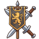
Missions and the AshWhat are Ash spots?
Ash spots are patches of Ash corruption on the lands you have opened in the campaign. Each one is a mission: a battle against that land's Ash Host. Cleanse it and the land turns green again. You find them on the Ash tab of the Expedition Post.
How do I unlock missions?
Build the Expedition Post. Without it you cannot send anyone out. The Post's level decides how many expeditions can be out at the same time:
| Expedition Post level | Expeditions at once |
|---|---|
| 1–2 | 1 |
| 3–5 | 2 |
| 6–8 | 3 |
| 9–10 | 4 |
Ash missions, hero quests, village fights, village errands and Tavern contracts all take one of these places. Supply runs do not.
How do new Ash spots appear?
- When you open a land for the first time, 2 Ash spots appear there at once.
- After that, a new spot creeps in about every 6 hours, counted from the newest spot in that land.
- A land holds at most 3 Ash spots. When it is full, nothing new comes until you cleanse one.
- Guarded lands grow Ash more slowly, and a fully guarded land grows none at all (see "Raids and the Watch").
Ash spots do not run out of time. They stay until you cleanse them, but the longer they lie, the more they stir up the Darkness.
What kinds of Ash missions are there?
| Kind | How often | What is special |
|---|---|---|
| Cleanse | 5 in 10 | A normal fight: up to 3 heroes and as many soldiers as you like. |
| Rescue | 2 in 10 | Two of the foes are mercenaries guarding prisoners. Win and 3–6 people come to live in your kingdom (if your houses have room). Takes 20 minutes longer. |
| Hero's task | 2 in 10 | Exactly one hero goes, with the troops you send along. The foes are a bit weaker (2 levels lower, one foe fewer). |
| Scouting party | 1 in 10 | A small, quick party: at most 80 soldiers, one foe fewer. |
How strong is a mission?
The battle is set a little above what you have already done: one level higher than the lowest of these two: the toughest open battle in that land, and the toughest battle you have won so far. That way a mission is never far ahead of your own progress. The number of foes is 4, plus 1 for every 4 battle levels (at most +3). Scouting parties and Hero's tasks have one foe fewer.
The card also shows a rough strength ~number: 60 + 45 × the level of that land's highest battle. Rescues count that last part 10% higher, Scouting parties a level lower and at a bit over half, and hero quests at half. Use the chance of success (below) to decide. It is the real figure.
How is the chance of success worked out?
The game does not guess. When you choose who goes, it fights the mission 8 times out of sight with exactly your line-up, by the real battle rules, and counts the wins. So the chance moves in steps of 12.5% (8 wins out of 8 is 100%, 4 out of 8 is 50%). When the mission comes back, the battle is fought once more for real, so a 75% mission can still be lost.
- Green (70% or more): a safe bet.
- White (40–69%): risky.
- Red (under 40%): send more, or wait.
How does my army line up on a mission?
You do not place anyone. The army sets itself up: heroes in the second row with their escorts, melee troops in front, ranged troops at the back, from the middle outward. Heroes use their power the moment it is charged.
Your soldiers fight as legions. One legion stands for about 20 soldiers. How many legions can take the field depends on the troop capacity of the heroes you send. A hero leads 6, +1 every 5 levels, +2 per promotion. Each legion costs its troop cost: Swordsmen 2, Archers, Spearmen and Rangers 3, Knights 5, Treant Guardians 6. Without a hero, a captain leads a small line worth 8, and a Scouting party never has more than 8.
Does sending more soldiers than my heroes can lead help?
Yes, up to a point. Extra soldiers are shared over the legions, and a legion with more than 20 soldiers is stronger: twice as strong with 40, at most 4 times as strong with 80 or more. A legion with fewer than 20 is weaker (never below 30% strength). Higher tiers count more too: tier II is ×1.35, tier III ×1.8 and tier IV ×2.4.
How long is a mission away?
It depends on how many days' travel away the land is. Times are there and back, before any speed-ups:
| Land | Days away | Ash mission | Rescue | Hero quest / contract |
|---|---|---|---|---|
| Plains of Verlo | 1 | 60 min | 80 min | 40 min |
| Mist Marsh | 2 (1 with Old Chapel) | 95 min (60) | 115 min (80) | 50 min (40) |
| Iron Pass | 3 (2 with Pass Fort) | 130 min (95) | 150 min (115) | 60 min (50) |
| Dragon Coast | 4 | 165 min | 185 min | 70 min |
| Ash Plains | 5 (4 with Grey Watch) | 200 min (165) | 220 min (185) | 80 min (70) |
| Whisperwood lands | 3 | 130 min | 150 min | 60 min |
A village fight is close by: 30 minutes for a real fight, 20 for a small one. The Wagon Yard makes missions 3% faster per level. It needs its staff: with nobody working there you get half the bonus. All speed bonuses together stop at 60%.
What does a mission cost?
- Workers: 1 for every 20 soldiers (rounded up), or 1 if you send only heroes. If not enough people are free, porters are borrowed from your buildings and go back when the mission returns.
- Food: everyone eats for the time away: (soldiers + workers) × hours × ½, counting at least half an hour.
- Wood: 10, plus 1 for every 20 soldiers.
Example: 100 soldiers and 5 workers on a 95-minute mission cost 84 food and 15 wood.
What is the caravan, and who should go along?
You can take one person of a profession along from a building that has them at work. That building works a little slower until they are back.
- Healer (always asked): a third fewer soldiers lost.
- Smith (for Cleanse and Rescue): troops 8% stronger.
- Cook (when the land is 2 or more days away): a third less food.
Ylva's own quests need a healer along, from the Infirmary or the Care House.
What do I get for a win?
- The Ash spot is cleansed and the land turns green.
- A loot chest of 4 items. The foes that stood there decide which goods (beasts give food, miners ore, spellcasters books and seals, and so on). Missions give 1.4× the normal amount, or 2× with the land's favoured hero.
- Gear: 1 piece from an Ash mission, 2 with the favoured hero. Quests give 2 pieces with better colour odds.
- Experience for every hero who went: 60 + 20 × the land's level (double on a quest).
- Rescues: 3 to 6 new people.
What happens when a mission fails?
The survivors come home with nothing, and the Ash spot stays where it was so you can try again. You lose more soldiers on a defeat than on a win (see the next question).
How many soldiers do I lose?
Each legion's losses follow how badly it was hurt in the battle. A legion that is wiped out counts fully. Of those hurt soldiers, half are lost after a win and three quarters after a defeat. A healer in the caravan takes a third off, and the Healers' Oath decree a quarter. Of the soldiers lost, 60% (after a win) or 40% (after a defeat) are only wounded. They go to the Infirmary if it has free beds and come back healed later.
Which hero is best for which mission?
Each kind of Ash mission has a favoured hero, marked in green when you send:
| Mission | Favoured hero |
|---|---|
| Cleanse | Ylva |
| Rescue | Aldric |
| Scouting party | Fenna |
| Hero's task | Saran |
With the favoured hero along, the loot chest is bigger (2× instead of 1.4×) and you get one extra piece of gear.
What are hero quests?
Every hero in town gets a quest of their own each day (as long as they have none waiting). It shows up on the Quests tab, in the land of your next campaign battle. Only that hero can lead it, though you can send troops along. Quests are about half as strong as an Ash mission and always bring that hero 2 pieces of gear with better colour odds, plus double experience.
Can a hero be "away"?
Yes. A hero resting at the Moonwell Retreat cannot be sent until the rest is over. A hero on a mission or a Tavern guard contract is away until it returns, and heroes and soldiers who are away do not defend the city in a raid. The send screen shows how many soldiers are left to guard the city. Under 20 is shown in red.
Can I bring a mission home sooner?
Yes. In the last 3 minutes it is free (BACK NOW). Before that, SPEED UP costs 1 crystal for every 5 minutes left.
Can I watch a mission's battle?
Yes. Every mission is fought for real by the battle rules when it comes back. Open the Mission Log (the button at the top right of the Expedition Post) and tap a report to WATCH the battle. The log keeps reports for 7 days. You can change that in the settings (off, a few days, or always).
What are village requests?
Each morning the villagers ask for help:
- A delivery: hand over goods at once (80 + 40 × your Main Hall level of food, wood or stone, or 10 + 4 × Main Hall level of ore). Sometimes they thank you with a crystal (3 in 10 times).
- An errand: send 1–2 workers for 10–30 minutes. Pays 20 + 10 × Main Hall level in gold.
- From your 2nd campaign win, a fight: a small one, or (from your 4th win, 4 in 10 times) a real danger.
Requests stay for at least 30 hours, then make way for new ones. Helping makes the town happier for two days: +2 for a delivery or errand, +3 for a small fight, +5 for a real danger. Ignoring one costs −1, −2 or −4. Favours add at most +15 and ignored requests take at most −15.
What are Tavern contracts?
Merchants and nobles post paid jobs at the Tavern (from Tavern level 1 and your 2nd campaign win): 1 contract a day, 2 from Tavern level 4 and 3 from level 8.
- Escort: a small fight (up to 3 heroes, at most 80 soldiers). Pays 100 + 25 × your level in gold and 2 seals.
- Duel: one hero and the hero's guard, no soldiers, against one champion who is 4 levels stronger. Pays 80 + 30 × your level in gold and 3 seals.
- Guard duty: a hero is away for 2–4 hours with no fight. Pays (20 + 6 × your level) gold per hour and 1 seal.
"Your level" is the level of the toughest battle you have won. Won escorts and duels also have a 3 in 10 chance of a piece of gear, on top of the usual loot.
Who are the bandits?
One of the village's real dangers is bandits on the north road. If you leave that request alone, or lose the fight, the bandits keep the traders away for 48 hours: the travelling market comes one size smaller (stalls become wagons, wagons a single cart, and a cart does not come at all). Beat them and the roads are safe again at once. The Darkness can also bring bandits (see "Raids and the Watch").
What are the places on the map?
Some campaign battles free a place that helps you from then on:
| Place | Land | Freed by | What it gives |
|---|---|---|---|
| Verlo (town) | Plains of Verlo | Fields of Verlo | Traders for your market (needs Tavern level 2) |
| Mill Farm | Plains of Verlo | The Mill at the Ford | 300 food a day |
| Reed Huts (village) | Mist Marsh | Edge of the Marsh | 300 food and 200 wood a day; traders |
| Old Chapel (castle) | Mist Marsh | Stone Ferry | Trips to the Mist Marsh take a day less |
| Iron Mine | Iron Pass | Iron Pass | 12 ore a day |
| Pass Fort (castle) | Iron Pass | Gate of Ash | Trips to the Iron Pass take a day less |
| Harbor Town (port) | Dragon Coast | Dragon Coast | 250 gold a day; traders |
| Grey Watch (castle) | Ash Plains | Grey Fields | Trips to the Ash Plains take a day less |
How do supply runs work?
On the Supply tab, send carts to a freed farm, village, mine or port to fetch its goods, once per place per day. A run is quick: 8 seconds plus 4 per day of distance, at most 20 seconds (the Wagon Yard gives half its bonus here). It needs 2 workers, plus workers for any escort, and does not use an expedition place. A staffed Expedition Post adds 5% more goods per level, and a clerk along adds a quarter more.
Can supply runs go wrong?
Raiders may wait on the road: a 5% chance for every day of distance beyond your Watchtower's reach (the Watchtower watches one day of road per level), at most 15%. If they strike, half the goods are lost and sometimes (3 in 10) a worker too. An escort of 20 or more soldiers drives them off. Then you lose only a few soldiers (one in ten of the escort) and everything comes home.
Raids and the Watch
What is a raid?
Now and then the enemy marches on your city. Raids start once you have won 2 campaign battles and your Main Hall is at least level 2. There is only one raid on the way at a time.
How often do raids come?
The next raid arrives 10 to 18 hours after the last one (the first one 10 to 18 hours after raids start). The Open Gates decree brings raids a fifth sooner.
How strong is a raid?
Strength = 40 + 25 × the campaign battles you have won, plus a random 0 to 29.
| Battles won | Raid strength |
|---|---|
| 2 | 90–119 |
| 5 | 165–194 |
| 8 | 240–269 |
| 10 | 290–319 |
| 13 | 365–394 |
The attackers are one of: Ash soldiers, Bone archers, Ash hounds, Mercenaries or Cultists.
How much warning do I get?
The Watchtower spots a raid 30 minutes ahead per level (level 1: 30 minutes, level 10: 5 hours). A red RAID! plate then appears on the kingdom map with a countdown. Without a Watchtower you get no warning at all: you only read the report afterwards.
Who defends the city?
Only who is at home:
- Foot soldiers, archers, riders and rangers of these lines: Swordsmen, Spearmen, Archers, Cavalry, Elven Rangers and Treant Guardians. Siege engines and fliers take no part.
- Every hero at home, who adds one sixth of their Power (shown on the hero's page).
- Soldiers and heroes on missions or on guard duty do not defend.
The total is raised by 4% for every staffed level of the Watchtower.
How much does each soldier count for?
| Soldier line | Tier I | Tier II | Tier III | Tier IV |
|---|---|---|---|---|
| Swordsmen line | 0.8 | 1.08 | 1.44 | 1.92 |
| Spearmen, Archers, Elven Rangers | 1.2 | 1.62 | 2.16 | 2.88 |
| Cavalry (Riders to Knights) | 2.0 | 2.7 | 3.6 | 4.8 |
| Treant Guardians | 2.4 | 3.24 | 4.32 | 5.76 |
So 100 tier I Militia (Swordsmen line) give 80 defense.
What is my chance to hold the city?
Chance = 50% + (your defense ÷ their strength − 1) × 55%, never below 3% or above 97%.
| Your defense vs. their strength | Chance to hold |
|---|---|
| Half as strong | about 23% |
| Three quarters | about 36% |
| Equal | 50% |
| 1.25× | about 64% |
| 1.5× | about 78% |
| 1.75× | about 91% |
| 1.85× or more | 97% |
Tap the RAID! plate to see their strength, your defense and your chance.
What can I do when a raid is spotted?
Bring troops home in time, because only those at home defend. Then tap the plate and choose:
- FIGHT NOW: the raid is settled at once by your chance to hold. It costs nothing.
- DEFEND YOURSELF: play the battle yourself. The battle decides it, and you lose no extra soldiers beyond what the battle costs.
If you do nothing, the raid is settled by your chance when it arrives.
What happens if I hold the city?
The defenders lose 4% of their number (none extra if you played it). You get the attackers' purse: 20 + half the raid's strength in gold. If you played the battle and won, you also get experience and a loot chest.
What happens if the city is raided?
- The defenders lose 15% (none extra if you played it).
- Of each of food, wood, stone and gold, 20–35% is taken. Only what lies above the safe amount can be taken: a quarter of what your Warehouse can store.
- 1 to 3 people are lost.
- One producing building burns and makes nothing for 3 hours.
- Your people are unhappy: −15 happiness for a day.
As with missions, part of the soldiers lost are only wounded and go to the Infirmary if it has beds: 60% after a hold, 40% after a defeat.
What is the Darkness?
Beside the raids there is a second threat: signs the Watchtower sees but cannot place. Every freed land has a Darkness from 0 to 100. It is worse where Ash is left lying. The Darkness is the chance of ambushes: hidden foes in your battles, sneak attacks on the city, bandits on the traders' roads and attacks on your guards. It starts once you have won 2 campaign battles.
How is the Darkness worked out?
- Start at 10 (there is always a little unrest).
- Add 15 for each Ash spot in the land, plus 10 more for every day it has lain there, up to 40 per spot.
- Guards take up to 80% off: the share taken off is 80% × how well the land is guarded.
- The Watchtower takes 4% off per level (40% at level 10).
| Darkness | Word | What the watch says |
|---|---|---|
| 0–24 | Calm | Quiet roads |
| 25–54 | Uneasy | Tracks by the Ash that lead nowhere |
| 55–100 | Threatening | Something moves in the dark |
Example: two Ash spots, each lying for a day, no guards and a level 3 Watchtower: (10 + 25 + 25) × 0.88 ≈ 53, Uneasy.
What are posts and patrols?
At the Watchtower (The watch: posts and patrols) you can send legions of 20 soldiers to guard a freed land:
- A post keeps the Ash and the unrest down. It counts in full for the land's guard.
- A patrol keeps the roads: it protects the traders and your battles there, but counts only half for the land's guard.
Your home land, the Plains of Verlo, cannot have a post (it is your city), but it can have a patrol.
How many posts and patrols can I have?
| Watchtower level | Posts and patrols at once |
|---|---|
| 1 | 1 |
| 2–3 | 2 |
| 4–5 | 3 |
| 6–7 | 4 |
| 8–9 | 5 |
| 10 | 6 |
A post or patrol can hold as many legions as you like. You need at least 20 soldiers at home to add a legion.
Which soldiers go on guard, and can I get them back?
Adding a legion takes your strongest soldiers first (highest tier, then the strongest kind). Calling one back takes no time and sends the weakest home first. While on guard, soldiers are not at home (they do not defend in a raid) and not free for missions.
How many legions does a land need?
Full cover needs guard power equal to a quarter of an Ash mission's strength there, for each Ash spot in the land (counting at least one). Soldiers count the same as in the raid table above, and a patrol counts half. The land's watch screen shows "Guarded" as a percentage and tells you roughly how many legions at the post would cover it fully. Cleansing Ash spots lowers what you need.
What do guards do for the Ash?
New Ash spots grow more slowly in a guarded land: the usual 6 hours is divided by (1 − cover). So at 50% cover a new spot takes 12 hours. At 100% cover no new Ash appears at all.
When can a battle be an ambush?
In an ordinary campaign battle (not missions, raids or battles that already have a special situation such as night), hidden foes may lie in wait:
Chance = Darkness × 60% × (1 − how well the land's roads are patrolled)
So a Darkness of 50 with no patrol means a 30% chance. If the chance is 5% or more, you are told at the start of the battle. You are only told the chance, never whether they are really there. About 8 seconds into the fight, 2 hidden foes (3 when the Darkness is 55 or more) of the kinds already in the battle burst out beside and behind your lines. Keep a guard on your flanks. A land's watch screen shows its ambush chance.
What is a sneak attack on the city?
Every 12 hours the Darkness gets a chance to strike. The city is attacked without any warning with a chance of the worst Darkness of your lands × 25% (so 20% at a Darkness of 80). It is fought like a raid, and only who is at home defends. It is a bit weaker than a normal raid: (40 + 25 × battles won) × 70%, plus 0 to 19. A raid that was already on its way still comes as planned.
Can bandits attack my traders?
Yes. At each 12-hour check, the chance is the Darkness of your lands, less what your patrols cover, averaged over all your lands, × 40%. If they strike, the bandits keep the traders away for 48 hours and the market comes one size smaller. Patrols are your best defense here.
Can my guards be attacked?
Yes. At each 12-hour check, each post or patrol is attacked with a chance of the land's Darkness × 20% for a post, or × 35% for a patrol (patrols are out in the open). The attackers are about 30% of an Ash mission's strength there. Whether your guards hold uses the same chance formula as a raid, with +4% per staffed Watchtower level.
- Held: they lose 5% of their soldiers.
- Overrun: they lose a quarter of their soldiers.
What if I am away for a long time?
The Darkness checks every 12 hours, but after a long time away it catches up at most 4 checks at once. Raids that arrive while you are away are settled by your chance to hold, so leave enough soldiers at home.
Tips for the Watch
- Cleanse Ash spots early: each one adds 15 to 40 Darkness, and more every day it lies there.
- Full cover in the later lands takes many legions, but partial cover already helps: less Darkness and slower Ash. Check "Guarded" on the land's watch screen.
- Patrol the lands where you still fight campaign battles, to keep ambushes away.
- Upgrade the Watchtower: longer raid warnings, more posts and patrols, less Darkness, safer supply roads.
- Before you send a big mission, check "Left to guard the city" on the send screen.
The travelling market
What is the travelling market?
Now and then, traders from the towns you have freed set up shop on the square in front of your Main Hall. You can swap goods with them, buy rare things like seals and books, and buy or trade gear. When the market arrives, a banner says "The market is here", and a gold "MARKET!" plate on the kingdom screen takes you straight to the stalls.
How do I unlock the market?
You need two things:
- a Tavern at level 2 or higher (the traders need somewhere to stay; the Tavern itself needs Main Hall level 3), and
- at least one freed town, village or harbour on the campaign map.
Why is my market sometimes a cart and sometimes a big market?
The size depends on how many towns, villages and harbours you have freed:
| Freed towns | Market size |
|---|---|
| 1 | A trader's cart |
| 2 | Merchant wagons |
| 3 or more | The market (every stall) |
Bandits on the roads make it one size smaller (see below).
When does the market come, and how long does it stay?
| Market size | Comes every | Stays for |
|---|---|---|
| A trader's cart | 24 hours | 6 hours |
| Merchant wagons | 16 hours | 8 hours |
| The market | 10 hours | 10 hours |
The trader's cart always comes at the same time of day: from 17:00 to 23:00 UTC. The big market comes every 10 hours and stays 10 hours, so it never really leaves: when one visit ends, the next begins straight away with new wares. The market screen shows how long the current visit has left.
Which stalls are there?
- Trader's cart: just the cart, which sells everything.
- Merchant wagons: a merchant wagon, the Armourer, the Scribe & jeweller and the trader's cart.
- The market: the Baker & grocer, the Builder's yard, the Armourer, the Scribe & jeweller, the Spice merchant, the Money-changer and the trader's cart.
Tap a stall to see its wares, or tap ALL DEALS to see every offer at once.
What do bandits do to the market?
While bandits are on the roads, fewer traders get through and the market is one size smaller: the full market becomes wagons, wagons become a cart, and a cart does not come at all. Bandits stay for 48 hours. They show up when:
- you leave a village's bandit request alone until it runs out,
- you lose a bandit fight for the village, or
- the Darkness lets them onto the traders' roads at night (patrols on the roads help keep them away).
How do I get rid of the bandits?
Win a bandit fight for the village (from the Expedition Post). The roads are safe again at once and the traders come back in full.
How many trades are on offer?
Each visit has a few trades picked from the traders' list: 2 at a cart, 3 at the wagons, 4 at the full market. Bigger markets also pay better: what you get is +12% at the wagons and +25% at the full market (rounded down).
How often can I use a trade?
Ordinary trades can be used 3 times per visit. Rare trades (seals, books, ore and crystal deals) only once per visit. A new visit, or new wares, brings fresh trades with fresh limits.
Which trades can show up?
These are the base amounts (at a cart). At the wagons and the full market you get more, as shown.
| You give | You get (cart) | Wagons | Market | From | Rare? |
|---|---|---|---|---|---|
| 300 food | 200 wood | 224 | 250 | Cart | |
| 300 wood | 220 food | 246 | 275 | Cart | |
| 300 food | 150 stone | 168 | 187 | Cart | |
| 100 gold | 400 food | 448 | 500 | Cart | |
| 20 crystals | 2 books | 2 | 2 | Cart | Yes |
| 200 stone | – | 67 gold | 75 gold | Wagons | |
| 250 wood | – | 201 stone | 225 stone | Wagons | |
| 500 food | – | 134 gold | 150 gold | Wagons | |
| 150 gold | – | 13 ore | 15 ore | Wagons | Yes |
| 1500 gold | – | 2 seals | 2 seals | Wagons | Yes |
| 25 crystals | – | 3 seals | 3 seals | Wagons | Yes |
| 400 wood | – | – | 187 gold | Market | |
| 250 gold | – | – | 31 ore | Market | Yes |
| 400 stone | – | – | 25 ore | Market | Yes |
| 2000 gold | – | – | 3 books | Market | Yes |
What gear does the market sell?
The Armourer (or the cart) always brings a weapon, a body armour and a relic for one of your heroes. The wagons bring 1 extra piece and the full market 2 extra pieces (a random helm, arms, body, boots or weapon). A relic can only be worn by the hero it is made for. Every piece belongs to a set.
What colours can market gear be?
| Market size | Colours |
|---|---|
| A trader's cart | 70% grey, 30% green |
| Merchant wagons | 60% green, 40% blue |
| The market | 50% blue, 42% purple, 8% gold |
How much does market gear cost?
You can pay with seals, with gold (for the lower colours), or trade in a spare piece:
| Colour | Seals | Gold | Trade-in |
|---|---|---|---|
| Grey | 1 | 150 | grey piece + 0 gold |
| Green | 3 | 400 | green piece + 50 gold |
| Blue | 9 | 1200 | blue piece + 100 gold |
| Purple | 27 | – | purple piece + 150 gold |
| Gold | – | – | gold piece + 200 gold |
Gold pieces are never sold, only traded. Each piece can be bought once per visit.
How does trading in a piece work?
Bring a spare piece of the same colour from your backpack, plus a little gold (50 gold for each colour step above grey). You hand over the spare piece and get the market piece. Don't worry about the levels you put into the old piece: all the shards you spent on it come back to you.
What does "NEW WARES" do?
It asks the traders to bring out new wares: all trades and all gear offers are picked again, with fresh limits. It costs crystals, doubling each time within one visit: 5, 10, 20, 40, 80, 160, then 320 for every one after that.
Can I get new wares for free?
Yes, the Tavern's innkeeper knows the traders. Per visit you get 1 free refresh from Tavern level 5 and 2 free refreshes from Tavern level 9. The free ones are used first; after that you pay crystals.
Tips for the market
- Freeing your third town, village or harbour makes the market permanent and much better.
- Clear bandit requests quickly: bandits shrink the market for two whole days.
- Turn spare gear into better gear: trading in a spare piece keeps its shards.
- Food is easy to make early on; the cart's food trades are a cheap way to get wood and stone.
Training, games and goals
What is the Training tab?
The Training tab holds the little games of your kingdom: hero drills, the Rune Chest, the Forge, Carpentry and Twenty-One. Each game lives at its own building, so you need to build that building first; the Rune Chest is always there. Each game has a number of plays per day, shown as gold dots on its card.
Which games are there, and how many times a day can I play?
| Game | Building needed | Plays per day |
|---|---|---|
| Hero drills | Training Ground | 5 (shared by all heroes) |
| Rune Chest | none | 3 |
| Forge | Smithy | 3 |
| Carpentry | Workers' Houses | 3 |
| Twenty-One | Tavern | 5 |
| Harvest rush | a farm, lumber camp, quarry or mine | 3 |
Plays come back every new day.
How does the Rune Chest work?
Turn over two tiles at a time to find the 6 rune pairs. Each try is one turn. When all pairs are found, the chest opens. The fewer turns you need, the more gold: 110 minus 7 per turn (at least 20 gold). Finish within 10 turns and you also get 2 crystals.
| Turns | Gold | Crystals |
|---|---|---|
| 6 (perfect) | 68 | 2 |
| 8 | 54 | 2 |
| 10 | 40 | 2 |
| 12 | 26 | 0 |
| 13 or more | 20 | 0 |
How does the Forge work?
Pick a weapon to forge, then do three steps: heat it with the bellows (keep the heat in the gold band until the bar fills, and don't let it get too hot), hammer it when the white ring meets the gold ring, and quench it when the blade is cherry red. Your average score gives 0 to 3 stars (30+ = 1 star, 60+ = 2 stars, 85+ = 3 stars).
What does the Forge pay?
Gold = the weapon's top pay × (25% + 25% per star), so 3 stars gives the full amount. From 2 stars you also get ore.
| Weapon | Hammer strikes | Gold at 3 stars | Ore at 2 / 3 stars |
|---|---|---|---|
| Dagger | 5 | 40 | 1 / 2 |
| Sword | 7 | 70 | 2 / 4 |
| Battle Axe | 8 | 100 | 3 / 6 |
| Greatsword | 10 | 140 | 4 / 8 |
Bigger weapons are harder: more strikes, a faster beat and a smaller gold band.
Can the Forge give me gear?
Sometimes. A 3-star masterwork Battle Axe or Greatsword has a 35% chance to be good enough to keep. It goes to your vault as a weapon: usually grey, now and then (1 in 4) green.
How does Carpentry work?
First saw along the pencil line (drag your finger down the plank), then hammer 6 nails on the beat (tap when the ring closes on the nail). Your score is half the cut and half the nails.
| Score | Result | Building time saved | Or: free crew |
|---|---|---|---|
| 85% or more | Master work | 15% | 3 hours |
| 60% or more | Good work | 10% | 2 hours |
| Below 60% | Rough work | 5% | 1 hour |
The time saved goes to the building job with the most time left, as a share of that job's full building time. If nothing is being built, you get a free building crew for a few hours instead.
How do I play Twenty-One at the Tavern?
Bet 20, 50 or 100 gold against the innkeeper. You both get two cards (one of his is face down). Take more cards (DRAW) or stop (STAND); go over 21 and you lose. Then the innkeeper turns his card and draws until he has 17 or more. Aces count as 1 or 11, kings, queens and jacks as 10.
- Closer to 21 than the innkeeper (or he goes over): you get twice your bet back.
- 21 with your first two cards: two and a half times your bet.
- A draw: your bet back.
What is the harvest rush?
When you collect from a farm, lumber camp, quarry or mine whose store was (almost) full, you are offered a 20-second harvest rush: catch the falling harvest or tap the glowing logs, cracks and veins. Every catch adds 1/120 of a full store, so about 30 catches give an extra quarter of a full store. Three rushes a day.
What are hero drills?
At the Training Ground your heroes practise their own way to gain experience (XP). A drill costs 25 gold, and a good drill gives up to 70 XP. Your score decides the XP: a perfect drill gives all 70.
How many drills can I do per day?
There are 5 drills a day, shared by all your heroes together. Each hero also has their own daily limit, which grows with the Training Ground:
| Training Ground level | Drills per hero per day |
|---|---|
| 1–2 | 3 |
| 3–5 | 4 |
| 6–8 | 5 |
(It keeps going up by 1 every 3 levels, but the shared limit of 5 a day still counts.) A hero who is away, on a mission or resting at the Moonwell Retreat, can't drill.
What does each hero's drill look like?
- Aldric (sword): 8 rounds. Swipe the way the arrow on the dummy points, quickly.
- Thorgrim (axe): 5 throws. Tap when the swinging power gauge is in the gold.
- Ylva (fire): 12 wisps. Tap the wisps around the range before they go out.
- Saran (lance): 8 rings. Tap when a ring passes the point of the lance.
- Fenna (bow): her own archery drill (see below).
How does Fenna's archery drill work?
You get 5 arrows. Press to draw the bow, drag to aim, let go to shoot. Watch out for:
- Wind: shown as WIND 0 to 5 with arrows for the direction. A gold dot shows where your arrow will land.
- Sway: hold the bow drawn longer than a second and a half and your aim starts to wobble.
- Drawing too little: let go too quickly and the arrow drops short.
- Moving dummy: the dummy moves a bit faster with every arrow (and a little faster for a higher-level Fenna), so aim ahead of it.
How is the archery drill scored?
Each arrow scores 100 for a bullseye, 70 for the inner ring, 40 for the outer ring, 10 for straw and 0 for a miss. XP = your total out of 500, times 70. Five bullseyes give the full 70 XP.
What is the Monument?
The Monument is a building (it needs Main Hall level 2, up to level 10) with goals carved into it. Reach a goal and claim its reward with a tap, or claim everything at once with CLAIM ALL. There are three kinds of goals: daily goals, growth goals and glory goals. A glowing bubble on the Monument means a reward is waiting.
What are the daily goals?
Every day you get new goals, picked from this list:
- Collect goods 4 times (+1 for every 3 Monument levels)
- Win 2 battles
- Train 30 soldiers (+10 for every 2 Monument levels)
- Send 1 mission
- Start 2 upgrades
- Do 3 weapon drills
New daily goals arrive at midnight UTC; the Monument shows how long until then.
How many daily goals do I get, and what do they pay?
| Monument level | Daily goals | Gold per goal | Crystals per goal | Seals per goal |
|---|---|---|---|---|
| 1 | 2 | 90 | 0 | 0 |
| 2 | 2 | 120 | 0 | 0 |
| 3 | 2 | 150 | 1 | 0 |
| 4 | 3 | 180 | 2 | 0 |
| 5 | 3 | 210 | 2 | 1 |
| 6 | 3 | 240 | 2 | 1 |
| 7 | 4 | 270 | 2 | 1 |
| 8 | 4 | 300 | 3 | 1 |
| 9 | 4 | 330 | 3 | 1 |
| 10 | 5 | 360 | 3 | 1 |
When you have claimed all of the day's goals, you also get one grey piece of gear.
What are the growth goals?
Growth goals reward your kingdom for getting bigger. There are four ladders, and you always see the next step of each. Every growth goal you claim also gives a green piece of gear.
| Ladder | Steps | First step pays | Each next step adds |
|---|---|---|---|
| Main Hall level | 2, 3, 4 ... up to 20 | 150 gold, 2 crystals | +150 gold, +1 crystal (seals and books at higher steps) |
| People | 20, 40, 60, 90, 130, 180, 220 | 200 gold, 3 crystals, 1 book | +200 gold, +1 crystal (more books) |
| An army of | 250, 400, 600, 900, 1300, 2000, 3000 | 200 gold, 3 crystals, 1 seal | +200 gold, +1 crystal (more seals) |
| Buildings at level 5 | 3, 6, 10, 15 | 300 gold, 5 crystals, 1 seal, 1 book | +300 gold, +2 crystals, +1 seal, +1 book |
What are the glory goals?
Glory goals are the great deeds of the campaign. Every glory goal you claim also gives a blue piece of gear.
| Goal | Steps | First step pays | Each next step adds |
|---|---|---|---|
| Free a land | one land at a time, in order | 500 gold, 10 crystals, 3 seals, 2 books | +500 gold, +5 crystals, +1 seal, +1 book |
| Cleanse 10 Ash spots | once | 800 gold, 15 crystals, 4 seals, 2 books | – |
| Complete missions | 3, 10, 25, 50, 100 | 300 gold, 5 crystals, 1 seal, 1 book | +300 gold, +3 crystals, +1 seal, +1 book |
| Win battles with three stars | 3, 6, 10, 13 | 400 gold, 8 crystals, 2 seals, 1 book | +400 gold, +4 crystals, +1 seal, +1 book |
| Heroes in the Hero Hall | 2, 3, 4, 5 | 500 gold, 10 crystals, 3 seals, 2 books | +500 gold, +5 crystals, +1 seal, +1 book |
What is the daily chest?
Once a day you can open a free chest from the Map screen. Open it on days in a row to build a streak of up to 7 days. After day 7 the streak starts again at day 1. If you miss a day, it also starts over at day 1.
What is in the daily chest?
Every chest has 1 book and 1 seal (5 seals on day 7), plus:
| Streak day | Gold | Crystals | Gear |
|---|---|---|---|
| 1 | 50 | 0 | – |
| 2 | 75 | 0 | – |
| 3 | 100 | 1 | grey piece |
| 4 | 125 | 0 | – |
| 5 | 150 | 2 | green piece |
| 6 | 200 | 0 | – |
| 7 | 150 | 10 | blue piece |
Tips for games and goals
- Play the Rune Chest every day: it needs no building and gives crystals if you are quick.
- Use Carpentry while a long building job is running: 15% off a long upgrade can save hours.
- Spread the 5 daily drills over the heroes who need XP most.
- Never skip the daily chest: day 7 has 10 crystals, 5 seals and a blue piece.
- Upgrading the Monument gives more daily goals and richer rewards.
The guide follows the game as it is now; numbers can change with updates. Something unclear or missing? Write to info@naberiusgames.com.